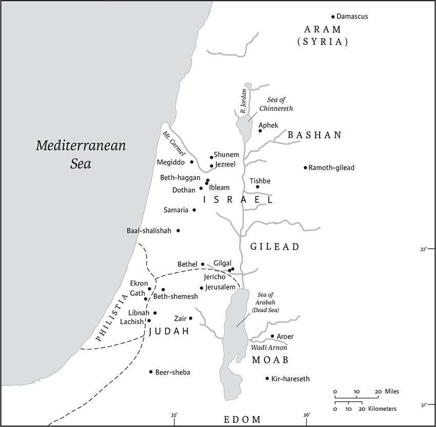
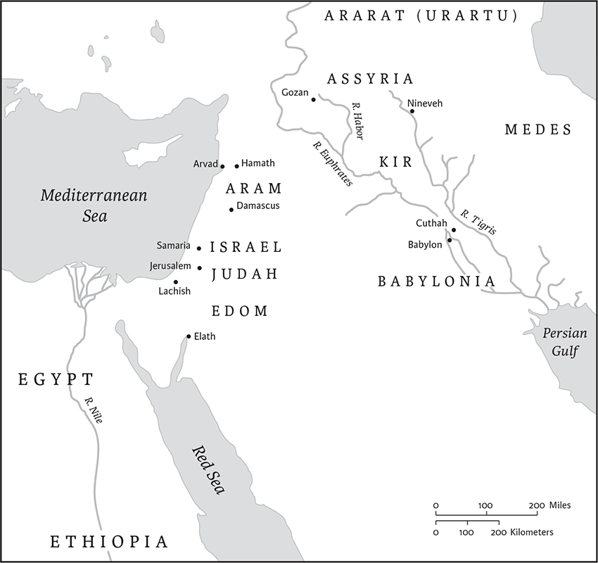
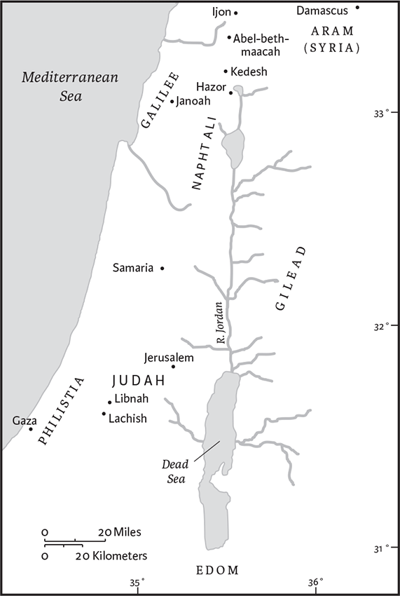
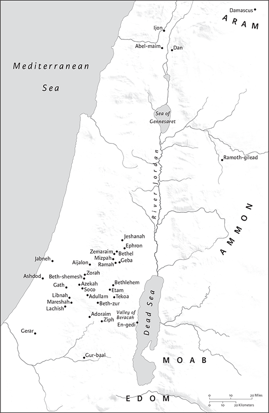
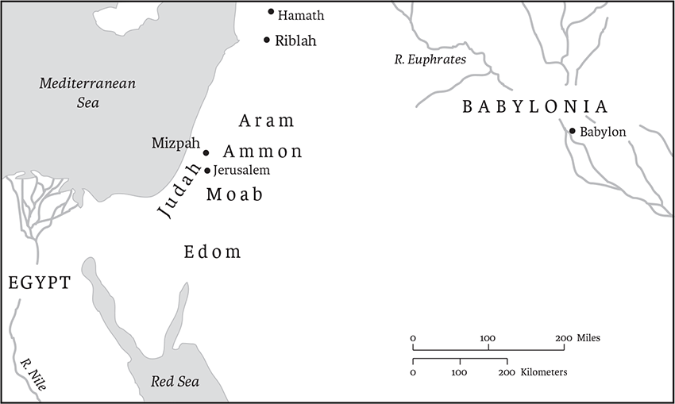

2 Kings
4 Kingdoms in Greek
Second Kings is a continuation of First Kings, and the two originally formed one book, as they still do in the traditional Hebrew text. For an introduction to this work, see the Introduction to 1 Kings (pp. 493–95).
Structure and Contents
Second Kings starts during the short reign of Ahaziah king of Israel, with a formula (“after the death of Ahab”) that recalls the openings of the preceding books of Joshua, Judges, and 2 Samuel. The book is divided thematically into two parts: chs 1–17 continue the synchronic history of the two kingdoms of Judah and Israel until the fall of Samaria in 722 bce; chs 18–25 relate the last century and a half of the Judean kingdom until the destruction of Jerusalem and its Temple and the exile of 586. The first part contains several stories about the prophet Elisha (chs 2–8). After he is installed as Elijah’s successor, he performs many miracles, several of which parallel tales told about Elijah in the first book of Kings. Although these stories follow the ones about Elijah, it is possible that the Elisha stories were written first, and Elijah was modeled after him, to prefigure his miracles. But he is also involved in high politics when he legitimates two coups d’état: he proclaims that Hazael will become king of Aram (8.7–15), and has Jehu anointed as king of Israel, to exterminate the house of Ahab (chs 9–10). In general, while Elijah fights the royal establishment, Elisha is sympathetic toward the northern kings.
The reign of queen Athaliah over Judah in ch 11 interrupts the Davidic dynasty, and is presented by the Deuteronomistic historians as illegitimate. The Davidic line continues with King Joash (ch 12), who escaped from Athaliah’s massacre. Chapters 13–17 continue the parallel history of the two kingdoms, which is told from a clearly Judean perspective: the northern kings Jehoahaz, Jehoash, Jeroboam II, Zechariah, Shallum, Menachem, Pekahiah, Pekah, and Hoshea are altogether bad kings, since they continue the “sin of Jeroboam” (see 1 Kings 12.30), venerating the Lord outside Jerusalem and worshiping other deities. Among the Judean kings, Jehoash, Amaziah, Azariah, and Jotham are evaluated positively, although they are criticized for tolerating the high places outside Jerusalem. The Judean king Ahaz, however, is presented as walking in the way of the kings of Israel. The fall of Israel related in 2 Kings 17 provides a long commentary in typical Deuteronomistic style, which indicates the reasons that led to the end of the Northern Kingdom and its transformation into an Assyrian province, but also hints ahead at the destruction of Judah (vv. 19–20).
The second part of 2 Kings (chs 18–25), which relates the story of the kingdom of Judah until its end, presents two kings, Hezekiah and Josiah, very positively. Hezekiah (chs 18–20) abolishes illegitimate religious practices in Jerusalem and in Judah; under his reign the Assyrian siege of Jerusalem fails because of the Lord’s intervention. His son Manasseh (ch 21) is presented as the worst of all kings of Judah, although he reigned for fifty‐five years. He is explicitly compared to the worst Israelite king, Ahab, reintroducing forbidden religious practices; one redactor even presents him as responsible for the later destruction of Jerusalem. He is succeeded by the wicked Amon, who is followed by Josiah, who undertakes a sweeping religious reform, making Jerusalem the only legitimate sanctuary for the worship of the Lord and destroying all symbols of unorthodox worship (chs 22–23). But Josiah is killed by the Egyptian king, and his four successors Jehoahaz, Jehoiakim, Jehoiachin, and Zedekiah (chs 23–24) are judged negatively by the Deuteronomistic historians, employing with the same formula: “he did what was evil in the sight of the Lord, just as his father(s) had done.” This hastens the destruction of Jerusalem by the Babylonians, who are presented as the tool of divine punishment (chs 24–25). The book ends with a short note about the release of the Judean king Jehoiachin from his Babylonian prison: he stays in Babylon but becomes a privileged guest at the table of the king of Babylon (25.27–30).
Thomas Römer
1 After the death of Ahab, Moab rebelled against Israel.
2Ahaziah had fallen through the lattice in his upper chamber in Samaria, and lay injured; so he sent messengers, telling them, “Go, inquire of Baal‐zebub, the god of Ekron, whether I shall recover from this injury.” 3But the angel of the Lord said to Elijah the Tishbite, “Get up, go to meet the messengers of the king of Samaria, and say to them, ‘Is it because there is no God in Israel that you are going to inquire of Baal‐zebub, the god of Ekron?’ 4Now therefore thus says the Lord, ‘You shall not leave the bed to which you have gone, but you shall surely die.’” So Elijah went.
5The messengers returned to the king, who said to them, “Why have you returned?” 6They answered him, “There came a man to meet us, who said to us, ‘Go back to the king who sent you, and say to him: Thus says the Lord: Is it because there is no God in Israel that you are sending to inquire of Baal‐zebub, the god of Ekron? Therefore you shall not leave the bed to which you have gone, but shall surely die.’” 7He said to them, “What sort of man was he who came to meet you and told you these things?” 8They answered him, “A hairy man, with a leather belt around his waist.” He said, “It is Elijah the Tishbite.”
9Then the king sent to him a captain of fifty with his fifty men. He went up to Elijah, who was sitting on the top of a hill, and said to him, “O man of God, the king says, ‘Come down.’” 10But Elijah answered the captain of fifty, “If I am a man of God, let fire come down from heaven and consume you and your fifty.” Then fire came down from heaven, and consumed him and his fifty.
11Again the king sent to him another captain of fifty with his fifty. He went upa and said to him, “O man of God, this is the king’s order: Come down quickly!” 12But Elijah answered them, “If I am a man of God, let fire come down from heaven and consume you and your fifty.” Then the fire of God came down from heaven and consumed him and his fifty.
13Again the king sent the captain of a third fifty with his fifty. So the third captain of fifty went up, and came and fell on his knees before Elijah, and entreated him, “O man of God, please let my life, and the life of these fifty servants of yours, be precious in your sight. 14Look, fire came down from heaven and consumed the two former captains of fifty men with their fifties; but now let my life be precious in your sight.” 15Then the angel of the Lord said to Elijah, “Go down with him; do not be afraid of him.” So he set out and went down with him to the king, 16and said to him, “Thus says the Lord: Because you have sent messengers to inquire of Baalzebub, the god of Ekron,—is it because there is no God in Israel to inquire of his word?— therefore you shall not leave the bed to which you have gone, but you shall surely die.”
17So he died according to the word of the Lord that Elijah had spoken. His brother,b Jehoram succeeded him as king in the second year of King Jehoram son of Jehoshaphat of Judah, because Ahaziah had no son. 18Now the rest of the acts of Ahaziah that he did, are they not written in the Book of the Annals of the Kings of Israel?

The geography of the Elisha narratives, chs 1–14. The dashed line shows the approximate boundaries between Israel, Judah, and Philistia.
2 Now when the Lord was about to take Elijah up to heaven by a whirlwind, Elijah and Elisha were on their way from Gilgal. 2Elijah said to Elisha, “Stay here; for the Lord has sent me as far as Bethel.” But Elisha said, “As the Lord lives, and as you yourself live, I will not leave you.” So they went down to Bethel. 3The company of prophetsa who were in Bethel came out to Elisha, and said to him, “Do you know that today the Lord will take your master away from you?” And he said, “Yes, I know; keep silent.”
4Elijah said to him, “Elisha, stay here; for the Lord has sent me to Jericho.” But he said, “As the Lord lives, and as you yourself live, I will not leave you.” So they came to Jericho. 5The company of prophetsa who were at Jericho drew near to Elisha, and said to him, “Do you know that today the Lord will take your master away from you?” And he answered, “Yes, I know; be silent.”
6Then Elijah said to him, “Stay here; for the Lord has sent me to the Jordan.” But he said, “As the Lord lives, and as you yourself live, I will not leave you.” So the two of them went on. 7Fifty men of the company of prophetsa also went, and stood at some distance from them, as they both were standing by the Jordan. 8Then Elijah took his mantle and rolled it up, and struck the water; the water was parted to the one side and to the other, until the two of them crossed on dry ground.
9When they had crossed, Elijah said to Elisha, “Tell me what I may do for you, before I am taken from you.” Elisha said, “Please let me inherit a double share of your spirit.” 10He responded, “You have asked a hard thing; yet, if you see me as I am being taken from you, it will be granted you; if not, it will not.” 11As they continued walking and talking, a chariot of fire and horses of fire separated the two of them, and Elijah ascended in a whirlwind into heaven. 12Elisha kept watching and crying out, “Father, father! The chariots of Israel and its horsemen!” But when he could no longer see him, he grasped his own clothes and tore them in two pieces.
13He picked up the mantle of Elijah that had fallen from him, and went back and stood on the bank of the Jordan. 14He took the mantle of Elijah that had fallen from him, and struck the water, saying, “Where is the Lord, the God of Elijah?” When he had struck the water, the water was parted to the one side and to the other, and Elisha went over.
15When the company of prophetsa who were at Jericho saw him at a distance, they declared, “The spirit of Elijah rests on Elisha.” They came to meet him and bowed to the ground before him. 16They said to him, “See now, we have fifty strong men among your servants; please let them go and seek your master; it may be that the spirit of the Lord has caught him up and thrown him down on some mountain or into some valley.” He responded, “No, do not send them.” 17But when they urged him until he was ashamed, he said, “Send them.” So they sent fifty men who searched for three days but did not find him. 18When they came back to him (he had remained at Jericho), he said to them, “Did I not say to you, Do not go?”
19Now the people of the city said to Elisha, “The location of this city is good, as my lord sees; but the water is bad, and the land is unfruitful.” 20He said, “Bring me a new bowl, and put salt in it.” So they brought it to him. 21Then he went to the spring of water and threw the salt into it, and said, “Thus says the Lord, I have made this water wholesome; from now on neither death nor miscarriage shall come from it.” 22So the water has been wholesome to this day, according to the word that Elisha spoke.
23He went up from there to Bethel; and while he was going up on the way, some small boys came out of the city and jeered at him, saying, “Go away, baldhead! Go away, baldhead!” 24When he turned around and saw them, he cursed them in the name of the Lord. Then two she‐bears came out of the woods and mauled forty‐two of the boys. 25From there he went on to Mount Carmel, and then returned to Samaria.
3 In the eighteenth year of King Jehoshaphat of Judah, Jehoram son of Ahab became king over Israel in Samaria; he reigned twelve years. 2He did what was evil in the sight of the Lord, though not like his father and mother, for he removed the pillar of Baal that his father had made. 3Nevertheless he clung to the sin of Jeroboam son of Nebat, which he caused Israel to commit; he did not depart from it.
4Now King Mesha of Moab was a sheep breeder, who used to deliver to the king of Israel one hundred thousand lambs, and the wool of one hundred thousand rams. 5But when Ahab died, the king of Moab rebelled against the king of Israel. 6So King Jehoram marched out of Samaria at that time and mustered all Israel. 7As he went he sent word to King Jehoshaphat of Judah, “The king of Moab has rebelled against me; will you go with me to battle against Moab?” He answered, “I will; I am with you, my people are your people, my horses are your horses.” 8Then he asked, “By which way shall we march?” Jehoram answered, “By the way of the wilderness of Edom.”
9So the king of Israel, the king of Judah, and the king of Edom set out; and when they had made a roundabout march of seven days, there was no water for the army or for the animals that were with them. 10Then the king of Israel said, “Alas! The Lord has summoned us, three kings, only to be handed over to Moab.” 11But Jehoshaphat said, “Is there no prophet of the Lord here, through whom we may inquire of the Lord?” Then one of the servants of the king of Israel answered, “Elisha son of Shaphat, who used to pour water on the hands of Elijah, is here.” 12Jehoshaphat said, “The word of the Lord is with him.” So the king of Israel and Jehoshaphat and the king of Edom went down to him.
13Elisha said to the king of Israel, “What have I to do with you? Go to your father’s prophets or to your mother’s.” But the king of Israel said to him, “No; it is the Lord who has summoned us, three kings, only to be handed over to Moab.” 14Elisha said, “As the Lord of hosts lives, whom I serve, were it not that I have regard for King Jehoshaphat of Judah, I would give you neither a look nor a glance. 15But get me a musician.” And then, while the musician was playing, the power of the Lord came on him. 16And he said, “Thus says the Lord, ‘I will make this wadi full of pools.’ 17For thus says the Lord, ‘You shall see neither wind nor rain, but the wadi shall be filled with water, so that you shall drink, you, your cattle, and your animals.’ 18This is only a trifle in the sight of the Lord, for he will also hand Moab over to you. 19You shall conquer every fortified city and every choice city; every good tree you shall fell, all springs of water you shall stop up, and every good piece of land you shall ruin with stones.” 20The next day, about the time of the morning offering, suddenly water began to flow from the direction of Edom, until the country was filled with water.
21When all the Moabites heard that the kings had come up to fight against them, all who were able to put on armor, from the youngest to the oldest, were called out and were drawn up at the frontier. 22When they rose early in the morning, and the sun shone upon the water, the Moabites saw the water opposite them as red as blood. 23They said, “This is blood; the kings must have fought together, and killed one another. Now then, Moab, to the spoil!” 24But when they came to the camp of Israel, the Israelites rose up and attacked the Moabites, who fled before them; as they entered Moab they continued the attack.a 25The cities they overturned, and on every good piece of land everyone threw a stone, until it was covered; every spring of water they stopped up, and every good tree they felled. Only at Kir‐hareseth did the stone walls remain, until the slingers surrounded and attacked it. 26When the king of Moab saw that the battle was going against him, he took with him seven hundred swordsmen to break through, opposite the king of Edom; but they could not. 27Then he took his firstborn son who was to succeed him, and offered him as a burnt offering on the wall. And great wrath came upon Israel, so they withdrew from him and returned to their own land.
4 Now the wife of a member of the company of prophetsb cried to Elisha, “Your servant my husband is dead; and you know that your servant feared the Lord, but a creditor has come to take my two children as slaves.” 2Elisha said to her, “What shall I do for you? Tell me, what do you have in the house?” She answered, “Your servant has nothing in the house, except a jar of oil.” 3He said, “Go outside, borrow vessels from all your neighbors, empty vessels and not just a few. 4Then go in, and shut the door behind you and your children, and start pouring into all these vessels; when each is full, set it aside.” 5So she left him and shut the door behind her and her children; they kept bringing vessels to her, and she kept pouring. 6When the vessels were full, she said to her son, “Bring me another vessel.” But he said to her, “There are no more.” Then the oil stopped flowing. 7She came and told the man of God, and he said, “Go sell the oil and pay your debts, and you and your children can live on the rest.”
8One day Elisha was passing through Shunem, where a wealthy woman lived, who urged him to have a meal. So whenever he passed that way, he would stop there for a meal. 9She said to her husband, “Look, I am sure that this man who regularly passes our way is a holy man of God. 10Let us make a small roof chamber with walls, and put there for him a bed, a table, a chair, and a lamp, so that he can stay there whenever he comes to us.”
11One day when he came there, he went up to the chamber and lay down there. 12He said to his servant Gehazi, “Call the Shunammite woman.” When he had called her, she stood before him. 13He said to him, “Say to her, Since you have taken all this trouble for us, what may be done for you? Would you have a word spoken on your behalf to the king or to the commander of the army?” She answered, “I live among my own people.” 14He said, “What then may be done for her?” Gehazi answered, “Well, she has no son, and her husband is old.” 15He said, “Call her.” When he had called her, she stood at the door. 16He said, “At this season, in due time, you shall embrace a son.” She replied, “No, my lord, O man of God; do not deceive your servant.”
17The woman conceived and bore a son at that season, in due time, as Elisha had declared to her.
18When the child was older, he went out one day to his father among the reapers. 19He complained to his father, “Oh, my head, my head!” The father said to his servant, “Carry him to his mother.” 20He carried him and brought him to his mother; the child sat on her lap until noon, and he died. 21She went up and laid him on the bed of the man of God, closed the door on him, and left. 22Then she called to her husband, and said, “Send me one of the servants and one of the donkeys, so that I may quickly go to the man of God and come back again.” 23He said, “Why go to him today? It is neither new moon nor sabbath.” She said, “It will be all right.” 24Then she saddled the donkey and said to her servant, “Urge the animal on; do not hold back for me unless I tell you.” 25So she set out, and came to the man of God at Mount Carmel.
When the man of God saw her coming, he said to Gehazi his servant, “Look, there is the Shunammite woman; 26run at once to meet her, and say to her, Are you all right? Is your husband all right? Is the child all right?” She answered, “It is all right.” 27When she came to the man of God at the mountain, she caught hold of his feet. Gehazi approached to push her away. But the man of God said, “Let her alone, for she is in bitter distress; the Lord has hidden it from me and has not told me.” 28Then she said, “Did I ask my lord for a son? Did I not say, Do not mislead me?” 29He said to Gehazi, “Gird up your loins, and take my staff in your hand, and go. If you meet anyone, give no greeting, and if anyone greets you, do not answer; and lay my staff on the face of the child.” 30Then the mother of the child said, “As the Lord lives, and as you yourself live, I will not leave without you.” So he rose up and followed her. 31Gehazi went on ahead and laid the staff on the face of the child, but there was no sound or sign of life. He came back to meet him and told him, “The child has not awakened.”
32When Elisha came into the house, he saw the child lying dead on his bed. 33So he went in and closed the door on the two of them, and prayed to the Lord. 34Then he got up on the beda and lay upon the child, putting his mouth upon his mouth, his eyes upon his eyes, and his hands upon his hands; and while he lay bent over him, the flesh of the child became warm. 35He got down, walked once to and fro in the room, then got up again and bent over him; the child sneezed seven times, and the child opened his eyes. 36Elishab summoned Gehazi and said, “Call the Shunammite woman.” So he called her. When she came to him, he said, “Take your son.” 37She came and fell at his feet, bowing to the ground; then she took her son and left.
38When Elisha returned to Gilgal, there was a famine in the land. As the company of prophets wasc sitting before him, he said to his servant, “Put the large pot on, and make some stew for the company of prophets.”d 39One of them went out into the field to gather herbs; he found a wild vine and gathered from it a lapful of wild gourds, and came and cut them up into the pot of stew, not knowing what they were. 40They served some for the men to eat. But while they were eating the stew, they cried out, “O man of God, there is death in the pot!” They could not eat it. 41He said, “Then bring some flour.” He threw it into the pot, and said, “Serve the people and let them eat.” And there was nothing harmful in the pot.
42A man came from Baal‐shalishah, bringing food from the first fruits to the man of God: twenty loaves of barley and fresh ears of grain in his sack. Elisha said, “Give it to the people and let them eat.” 43But his servant said, “How can I set this before a hundred people?” So he repeated, “Give it to the people and let them eat, for thus says the Lord, ‘They shall eat and have some left.’” 44He set it before them, they ate, and had some left, according to the word of the Lord.
5 Naaman, commander of the army of the king of Aram, was a great man and in high favor with his master, because by him the Lord had given victory to Aram. The man, though a mighty warrior, suffered from leprosy.e 2Now the Arameans on one of their raids had taken a young girl captive from the land of Israel, and she served Naaman’s wife. 3She said to her mistress, “If only my lord were with the prophet who is in Samaria! He would cure him of his leprosy.”e4So Naamanb went in and told his lord just what the girl from the land of Israel had said. 5And the king of Aram said, “Go then, and I will send along a letter to the king of Israel.”
He went, taking with him ten talents of silver, six thousand shekels of gold, and ten sets of garments. 6He brought the letter to the king of Israel, which read, “When this letter reaches you, know that I have sent to you my servant Naaman, that you may cure him of his leprosy.”a 7When the king of Israel read the letter, he tore his clothes and said, “Am I God, to give death or life, that this man sends word to me to cure a man of his leprosy?a Just look and see how he is trying to pick a quarrel with me.”
8But when Elisha the man of God heard that the king of Israel had torn his clothes, he sent a message to the king, “Why have you torn your clothes? Let him come to me, that he may learn that there is a prophet in Israel.” 9So Naaman came with his horses and chariots, and halted at the entrance of Elisha’s house. 10Elisha sent a messenger to him, saying, “Go, wash in the Jordan seven times, and your flesh shall be restored and you shall be clean.” 11But Naaman became angry and went away, saying, “I thought that for me he would surely come out, and stand and call on the name of the Lord his God, and would wave his hand over the spot, and cure the leprosy!a12Are not Abanab and Pharpar, the rivers of Damascus, better than all the waters of Israel? Could I not wash in them, and be clean?” He turned and went away in a rage. 13But his servants approached and said to him, “Father, if the prophet had commanded you to do something difficult, would you not have done it? How much more, when all he said to you was, ‘Wash, and be clean’?” 14So he went down and immersed himself seven times in the Jordan, according to the word of the man of God; his flesh was restored like the flesh of a young boy, and he was clean.
15Then he returned to the man of God, he and all his company; he came and stood before him and said, “Now I know that there is no God in all the earth except in Israel; please accept a present from your servant.” 16But he said, “As the Lord lives, whom I serve, I will accept nothing!” He urged him to accept, but he refused. 17Then Naaman said, “If not, please let two mule‐loads of earth be given to your servant; for your servant will no longer offer burnt offering or sacrifice to any god except the Lord. 18But may the Lord pardon your servant on one count: when my master goes into the house of Rimmon to worship there, leaning on my arm, and I bow down in the house of Rimmon, when I do bow down in the house of Rimmon, may the Lord pardon your servant on this one count.” 19He said to him, “Go in peace.”
But when Naaman had gone from him a short distance, 20Gehazi, the servant of Elisha the man of God, thought, “My master has let that Aramean Naaman off too lightly by not accepting from him what he offered. As the Lord lives, I will run after him and get something out of him.” 21So Gehazi went after Naaman. When Naaman saw someone running after him, he jumped down from the chariot to meet him and said, “Is everything all right?” 22He replied, “Yes, but my master has sent me to say, ‘Two members of a company of prophetsc have just come to me from the hill country of Ephraim; please give them a talent of silver and two changes of clothing.’” 23Naaman said, “Please accept two talents.” He urged him, and tied up two talents of silver in two bags, with two changes of clothing, and gave them to two of his servants, who carried them in front of Gehazi.a 24When he came to the citadel, he took the bagsb from them, and stored them inside; he dismissed the men, and they left.
25He went in and stood before his master; and Elisha said to him, “Where have you been, Gehazi?” He answered, “Your servant has not gone anywhere at all.” 26But he said to him, “Did I not go with you in spirit when someone left his chariot to meet you? Is this a time to accept money and to accept clothing, olive orchards and vineyards, sheep and oxen, and male and female slaves? 27Therefore the leprosyc of Naaman shall cling to you, and to your descendants forever.” So he left his presence leprous,c as white as snow.
6 Now the company of prophetsd said to Elisha, “As you see, the place where we live under your charge is too small for us. 2Let us go to the Jordan, and let us collect logs there, one for each of us, and build a place there for us to live.” He answered, “Do so.” 3Then one of them said, “Please come with your servants.” And he answered, “I will.” 4So he went with them. When they came to the Jordan, they cut down trees. 5But as one was felling a log, his ax head fell into the water; he cried out, “Alas, master! It was borrowed.” 6Then the man of God said, “Where did it fall?” When he showed him the place, he cut off a stick, and threw it in there, and made the iron float. 7He said, “Pick it up.” So he reached out his hand and took it.
8Once when the king of Aram was at war with Israel, he took counsel with his officers. He said, “At such and such a place shall be my camp.” 9But the man of God sent word to the king of Israel, “Take care not to pass this place, because the Arameans are going down there.” 10The king of Israel sent word to the place of which the man of God spoke. More than once or twice he warned such a placee so that it was on the alert.
11The mind of the king of Aram was greatly perturbed because of this; he called his officers and said to them, “Now tell me who among us sides with the king of Israel?” 12Then one of his officers said, “No one, my lord king. It is Elisha, the prophet in Israel, who tells the king of Israel the words that you speak in your bedchamber.” 13He said, “Go and find where he is; I will send and seize him.” He was told, “He is in Dothan.” 14So he sent horses and chariots there and a great army; they came by night, and surrounded the city.
15When an attendant of the man of God rose early in the morning and went out, an army with horses and chariots was all around the city. His servant said, “Alas, master! What shall we do?” 16He replied, “Do not be afraid, for there are more with us than there are with them.” 17Then Elisha prayed: “O Lord, please open his eyes that he may see.” So the Lord opened the eyes of the servant, and he saw; the mountain was full of horses and chariots of fire all around Elisha. 18When the Arameansa came down against him, Elisha prayed to the Lord, and said, “Strike this people, please, with blindness.” So he struck them with blindness as Elisha had asked. 19Elisha said to them, “This is not the way, and this is not the city; follow me, and I will bring you to the man whom you seek.” And he led them to Samaria.
20As soon as they entered Samaria, Elisha said, “O Lord, open the eyes of these men so that they may see.” The Lord opened their eyes, and they saw that they were inside Samaria. 21When the king of Israel saw them he said to Elisha, “Father, shall I kill them? Shall I kill them?” 22He answered, “No! Did you capture with your sword and your bow those whom you want to kill? Set food and water before them so that they may eat and drink; and let them go to their master.” 23So he prepared for them a great feast; after they ate and drank, he sent them on their way, and they went to their master. And the Arameans no longer came raiding into the land of Israel.
24Some time later King Ben‐hadad of Aram mustered his entire army; he marched against Samaria and laid siege to it. 25As the siege continued, famine in Samaria became so great that a donkey’s head was sold for eighty shekels of silver, and one‐fourth of a kab of dove’s dung for five shekels of silver. 26Now as the king of Israel was walking on the city wall, a woman cried out to him, “Help, my lord king!” 27He said, “No! Let the Lord help you. How can I help you? From the threshing floor or from the wine press?” 28But then the king asked her, “What is your complaint?” She answered, “This woman said to me, ‘Give up your son; we will eat him today, and we will eat my son tomorrow.’ 29So we cooked my son and ate him. The next day I said to her, ‘Give up your son and we will eat him.’ But she has hidden her son.” 30When the king heard the words of the woman he tore his clothes—now since he was walking on the city wall, the people could see that he had sackcloth on his body underneath— 31and he said, “So may God do to me, and more, if the head of Elisha son of Shaphat stays on his shoulders today.” 32So he dispatched a man from his presence.
Now Elisha was sitting in his house, and the elders were sitting with him. Before the messenger arrived, Elisha said to the elders, “Are you aware that this murderer has sent someone to take off my head? When the messenger comes, see that you shut the door and hold it closed against him. Is not the sound of his master’s feet behind him?” 33While he was still speaking with them, the kingb came down to him and said, “This trouble is from the Lord! Why should I hope in the Lord any longer?”
7 But Elisha said, “Hear the word of the Lord: thus says the Lord, Tomorrow about this time a measure of choice meal shall be sold for a shekel, and two measures of barley for a shekel, at the gate of Samaria.” 2Then the captain on whose hand the king leaned said to the man of God, “Even if the Lord were to make windows in the sky, could such a thing happen?” But he said, “You shall see it with your own eyes, but you shall not eat from it.”
3Now there were four leprousa men outside the city gate, who said to one another, “Why should we sit here until we die? 4If we say, ‘Let us enter the city,’ the famine is in the city, and we shall die there; but if we sit here, we shall also die. Therefore, let us desert to the Aramean camp; if they spare our lives, we shall live; and if they kill us, we shall but die.” 5So they arose at twilight to go to the Aramean camp; but when they came to the edge of the Aramean camp, there was no one there at all. 6For the Lord had caused the Aramean army to hear the sound of chariots, and of horses, the sound of a great army, so that they said to one another, “The king of Israel has hired the kings of the Hittites and the kings of Egypt to fight against us.” 7So they fled away in the twilight and abandoned their tents, their horses, and their donkeys leaving the camp just as it was, and fled for their lives. 8When these leprousa men had come to the edge of the camp, they went into a tent, ate and drank, carried off silver, gold, and clothing, and went and hid them. Then they came back, entered another tent, carried off things from it, and went and hid them.
9Then they said to one another, “What we are doing is wrong. This is a day of good news; if we are silent and wait until the morning light, we will be found guilty; therefore let us go and tell the king’s household.” 10So they came and called to the gatekeepers of the city, and told them, “We went to the Aramean camp, but there was no one to be seen or heard there, nothing but the horses tied, the donkeys tied, and the tents as they were.” 11Then the gatekeepers called out and proclaimed it to the king’s household. 12The king got up in the night, and said to his servants, “I will tell you what the Arameans have prepared against us. They know that we are starving; so they have left the camp to hide themselves in the open country, thinking, ‘When they come out of the city, we shall take them alive and get into the city.’” 13One of his servants said, “Let some men take five of the remaining horses, since those left here will suffer the fate of the whole multitude of Israel that have perished already;b let us send and find out.” 14So they took two mounted men, and the king sent them after the Aramean army, saying, “Go and find out.” 15So they went after them as far as the Jordan; the whole way was littered with garments and equipment that the Arameans had thrown away in their haste. So the messengers returned, and told the king.
16Then the people went out, and plundered the camp of the Arameans. So a measure of choice meal was sold for a shekel, and two measures of barley for a shekel, according to the word of the Lord. 17Now the king had appointed the captain on whose hand he leaned to have charge of the gate; the people trampled him to death in the gate, just as the man of God had said when the king came down to him. 18For when the man of God had said to the king, “Two measures of barley shall be sold for a shekel, and a measure of choice meal for a shekel, about this time tomorrow in the gate of Samaria,” 19the captain had answered the man of God, “Even if the Lord were to make windows in the sky, could such a thing happen?” And he had answered, “You shall see it with your own eyes, but you shall not eat from it.” 20It did indeed happen to him; the people trampled him to death in the gate.
8 Now Elisha had said to the woman whose son he had restored to life, “Get up and go with your household, and settle wherever you can; for the Lord has called for a famine, and it will come on the land for seven years.” 2So the woman got up and did according to the word of the man of God; she went with her household and settled in the land of the Philistines seven years. 3At the end of the seven years, when the woman returned from the land of the Philistines, she set out to appeal to the king for her house and her land. 4Now the king was talking with Gehazi the servant of the man of God, saying, “Tell me all the great things that Elisha has done.” 5While he was telling the king how Elisha had restored a dead person to life, the woman whose son he had restored to life appealed to the king for her house and her land. Gehazi said, “My lord king, here is the woman, and here is her son whom Elisha restored to life.” 6When the king questioned the woman, she told him. So the king appointed an official for her, saying, “Restore all that was hers, together with all the revenue of the fields from the day that she left the land until now.”
7Elisha went to Damascus while King Ben‐hadad of Aram was ill. When it was told him, “The man of God has come here,” 8the king said to Hazael, “Take a present with you and go to meet the man of God. Inquire of the Lord through him, whether I shall recover from this illness.” 9So Hazael went to meet him, taking a present with him, all kinds of goods of Damascus, forty camel loads. When he entered and stood before him, he said, “Your son King Ben‐hadad of Aram has sent me to you, saying, ‘Shall I recover from this illness?’” 10Elisha said to him, “Go, say to him, ‘You shall certainly recover’; but the Lord has shown me that he shall certainly die.” 11He fixed his gaze and stared at him, until he was ashamed. Then the man of God wept. 12Hazael asked, “Why does my lord weep?” He answered, “Because I know the evil that you will do to the people of Israel; you will set their fortresses on fire, you will kill their young men with the sword, dash in pieces their little ones, and rip up their pregnant women.” 13Hazael said, “What is your servant, who is a mere dog, that he should do this great thing?” Elisha answered, “The Lord has shown me that you are to be king over Aram.” 14Then he left Elisha, and went to his master Benhadad,a who said to him, “What did Elisha say to you?” And he answered, “He told me that you would certainly recover.” 15But the next day he took the bed‐cover and dipped it in water and spread it over the king’s face, until he died. And Hazael succeeded him.
16In the fifth year of King Joram son of Ahab of Israel,b Jehoram son of King Jehoshaphat of Judah began to reign. 17He was thirty‐two years old when he became king, and he reigned eight years in Jerusalem. 18He walked in the way of the kings of Israel, as the house of Ahab had done, for the daughter of Ahab was his wife. He did what was evil in the sight of the Lord. 19Yet the Lord would not destroy Judah, for the sake of his servant David, since he had promised to give a lamp to him and to his descendants forever.
20In his days Edom revolted against the rule of Judah, and set up a king of their own. 21Then Joram crossed over to Zair with all his chariots. He set out by night and attacked the Edomites and their chariot commanders who had surrounded him;a but his army fled home. 22So Edom has been in revolt against the rule of Judah to this day. Libnah also revolted at the same time. 23Now the rest of the acts of Joram, and all that he did, are they not written in the Book of the Annals of the Kings of Judah? 24So Joram slept with his ancestors, and was buried with them in the city of David; his son Ahaziah succeeded him.
25In the twelfth year of King Joram son of Ahab of Israel, Ahaziah son of King Jehoram of Judah began to reign. 26Ahaziah was twenty‐two years old when he began to reign; he reigned one year in Jerusalem. His mother’s name was Athaliah, a granddaughter of King Omri of Israel. 27He also walked in the way of the house of Ahab, doing what was evil in the sight of the Lord, as the house of Ahab had done, for he was son‐in‐law to the house of Ahab.
28He went with Joram son of Ahab to wage war against King Hazael of Aram at Ramothgilead, where the Arameans wounded Joram. 29King Joram returned to be healed in Jezreel of the wounds that the Arameans had inflicted on him at Ramah, when he fought against King Hazael of Aram. King Ahaziah son of Jehoram of Judah went down to see Joram son of Ahab in Jezreel, because he was wounded.
9 Then the prophet Elisha called a member of the company of prophetsb and said to him, “Gird up your loins; take this flask of oil in your hand, and go to Ramoth‐gilead. 2When you arrive, look there for Jehu son of Jehoshaphat, son of Nimshi; go in and get him to leave his companions, and take him into an inner chamber. 3Then take the flask of oil, pour it on his head, and say, ‘Thus says the Lord: I anoint you king over Israel.’ Then open the door and flee; do not linger.”
4So the young man, the young prophet, went to Ramoth‐gilead. 5He arrived while the commanders of the army were in council, and he announced, “I have a message for you, commander.” “For which one of us?” asked Jehu. “For you, commander.” 6So Jehuc got up and went inside; the young man poured the oil on his head, saying to him, “Thus says the Lord the God of Israel: I anoint you king over the people of the Lord, over Israel. 7You shall strike down the house of your master Ahab, so that I may avenge on Jezebel the blood of my servants the prophets, and the blood of all the servants of the Lord. 8For the whole house of Ahab shall perish; I will cut off from Ahab every male, bond or free, in Israel. 9I will make the house of Ahab like the house of Jeroboam son of Nebat, and like the house of Baasha son of Ahijah. 10The dogs shall eat Jezebel in the territory of Jezreel, and no one shall bury her.” Then he opened the door and fled.
11When Jehu came back to his master’s officers, they said to him, “Is everything all right? Why did that madman come to you?” He answered them, “You know the sort and how they babble.” 12They said, “Liar! Come on, tell us!” So he said, “This is just what he said to me: ‘Thus says the Lord, I anoint you king over Israel.’” 13Then hurriedly they all took their cloaks and spread them for him on the barea steps; and they blew the trumpet, and proclaimed, “Jehu is king.”
14Thus Jehu son of Jehoshaphat son of Nimshi conspired against Joram. Joram with all Israel had been on guard at Ramoth‐gilead against King Hazael of Aram; 15but King Joram had returned to be healed in Jezreel of the wounds that the Arameans had inflicted on him, when he fought against King Hazael of Aram. So Jehu said, “If this is your wish, then let no one slip out of the city to go and tell the news in Jezreel.” 16Then Jehu mounted his chariot and went to Jezreel, where Joram was lying ill. King Ahaziah of Judah had come down to visit Joram.
17In Jezreel, the sentinel standing on the tower spied the company of Jehu arriving, and said, “I see a company.” Joram said, “Take a horseman; send him to meet them, and let him say, ‘Is it peace?’” 18So the horseman went to meet him; he said, “Thus says the king, ‘Is it peace?’” Jehu responded, “What have you to do with peace? Fall in behind me.” The sentinel reported, saying, “The messenger reached them, but he is not coming back.” 19Then he sent out a second horseman, who came to them and said, “Thus says the king, ‘Is it peace?’” Jehu answered, “What have you to do with peace? Fall in behind me.” 20Again the sentinel reported, “He reached them, but he is not coming back. It looks like the driving of Jehu son of Nimshi; for he drives like a maniac.”
21Joram said, “Get ready.” And they got his chariot ready. Then King Joram of Israel and King Ahaziah of Judah set out, each in his chariot, and went to meet Jehu; they met him at the property of Naboth the Jezreelite. 22When Joram saw Jehu, he said, “Is it peace, Jehu?” He answered, “What peace can there be, so long as the many whoredoms and sorceries of your mother Jezebel continue?” 23Then Joram reined about and fled, saying to Ahaziah, “Treason, Ahaziah!” 24Jehu drew his bow with all his strength, and shot Joram between the shoulders, so that the arrow pierced his heart; and he sank in his chariot. 25Jehu said to his aide Bidkar, “Lift him out, and throw him on the plot of ground belonging to Naboth the Jezreelite; for remember, when you and I rode side by side behind his father Ahab how the Lord uttered this oracle against him: 26‘For the blood of Naboth and for the blood of his children that I saw yesterday, says the Lord, I swear I will repay you on this very plot of ground.’ Now therefore lift him out and throw him on the plot of ground, in accordance with the word of the Lord.”
27When King Ahaziah of Judah saw this, he fled in the direction of Beth‐haggan. Jehu pursued him, saying, “Shoot him also!” And they shot hima in the chariot at the ascent to Gur, which is by Ibleam. Then he fled to Megiddo, and died there. 28His officers carried him in a chariot to Jerusalem, and buried him in his tomb with his ancestors in the city of David.
29In the eleventh year of Joram son of Ahab, Ahaziah began to reign over Judah.
30When Jehu came to Jezreel, Jezebel heard of it; she painted her eyes, and adorned her head, and looked out of the window. 31As Jehu entered the gate, she said, “Is it peace, Zimri, murderer of your master?” 32He looked up to the window and said, “Who is on my side? Who?” Two or three eunuchs looked out at him. 33He said, “Throw her down.” So they threw her down; some of her blood spattered on the wall and on the horses, which trampled on her. 34Then he went in and ate and drank; he said, “See to that cursed woman and bury her; for she is a king’s daughter.” 35But when they went to bury her, they found no more of her than the skull and the feet and the palms of her hands. 36When they came back and told him, he said, “This is the word of the Lord, which he spoke by his servant Elijah the Tishbite, ‘In the territory of Jezreel the dogs shall eat the flesh of Jezebel; 37the corpse of Jezebel shall be like dung on the field in the territory of Jezreel, so that no one can say, This is Jezebel.’”
10 Now Ahab had seventy sons in Samaria. So Jehu wrote letters and sent them to Samaria, to the rulers of Jezreel,b to the elders, and to the guardians of the sons of c Ahab, saying, 2“Since your master’s sons are with you and you have at your disposal chariots and horses, a fortified city, and weapons, 3select the son of your master who is the best qualified, set him on his father’s throne, and fight for your master’s house.” 4But they were utterly terrified and said, “Look, two kings could not withstand him; how then can we stand?” 5So the steward of the palace, and the governor of the city, along with the elders and the guardians, sent word to Jehu: “We are your servants; we will do anything you say. We will not make anyone king; do whatever you think right.” 6Then he wrote them a second letter, saying, “If you are on my side, and if you are ready to obey me, take the heads of your master’s sons and come to me at Jezreel tomorrow at this time.” Now the king’s sons, seventy persons, were with the leaders of the city, who were charged with their upbringing. 7When the letter reached them, they took the king’s sons and killed them, seventy persons; they put their heads in baskets and sent them to him at Jezreel. 8When the messenger came and told him, “They have brought the heads of the king’s sons,” he said, “Lay them in two heaps at the entrance of the gate until the morning.” 9Then in the morning when he went out, he stood and said to all the people, “You are innocent. It was I who conspired against my master and killed him; but who struck down all these? 10Know then that there shall fall to the earth nothing of the word of the Lord, which the Lord spoke concerning the house of Ahab; for the Lord has done what he said through his servant Elijah.” 11So Jehu killed all who were left of the house of Ahab in Jezreel, all his leaders, close friends, and priests, until he left him no survivor.
12Then he set out and went to Samaria. On the way, when he was at Beth‐eked of the Shepherds, 13Jehu met relatives of King Ahaziah of Judah and said, “Who are you?” They answered, “We are kin of Ahaziah; we have come down to visit the royal princes and the sons of the queen mother.” 14He said, “Take them alive.” They took them alive, and slaughtered them at the pit of Beth‐eked, forty‐two in all; he spared none of them.
15When he left there, he met Jehonadab son of Rechab coming to meet him; he greeted him, and said to him, “Is your heart as true to mine as mine is to yours?”a Jehonadab answered, “It is.” Jehu said,b “If it is, give me your hand.” So he gave him his hand. Jehu took him up with him into the chariot. 16He said, “Come with me, and see my zeal for the Lord.” So hec had him ride in his chariot. 17When he came to Samaria, he killed all who were left to Ahab in Samaria, until he had wiped them out, according to the word of the Lord that he spoke to Elijah.
18Then Jehu assembled all the people and said to them, “Ahab offered Baal small service; but Jehu will offer much more. 19Now therefore summon to me all the prophets of Baal, all his worshipers, and all his priests; let none be missing, for I have a great sacrifice to offer to Baal; whoever is missing shall not live.” But Jehu was acting with cunning in order to destroy the worshipers of Baal. 20Jehu decreed, “Sanctify a solemn assembly for Baal.” So they proclaimed it. 21Jehu sent word throughout all Israel; all the worshipers of Baal came, so that there was no one left who did not come. They entered the temple of Baal, until the temple of Baal was filled from wall to wall. 22He said to the keeper of the wardrobe, “Bring out the vestments for all the worshipers of Baal.” So he brought out the vestments for them. 23Then Jehu entered the temple of Baal with Jehonadab son of Rechab; he said to the worshipers of Baal, “Search and see that there is no worshiper of the Lord here among you, but only worshipers of Baal.” 24Then they proceeded to offer sacrifices and burnt offerings.
Now Jehu had stationed eighty men outside, saying, “Whoever allows any of those to escape whom I deliver into your hands shall forfeit his life.” 25As soon as he had finished presenting the burnt offering, Jehu said to the guards and to the officers, “Come in and kill them; let no one escape.” So they put them to the sword. The guards and the officers threw them out, and then went into the citadel of the temple of Baal. 26They brought out the pillard that was in the temple of Baal, and burned it. 27Then they demolished the pillar of Baal, and destroyed the temple of Baal, and made it a latrine to this day.
28Thus Jehu wiped out Baal from Israel. 29But Jehu did not turn aside from the sins of Jeroboam son of Nebat, which he caused Israel to commit—the golden calves that were in Bethel and in Dan. 30The Lord said to Jehu, “Because you have done well in carrying out what I consider right, and in accordance with all that was in my heart have dealt with the house of Ahab, your sons of the fourth generation shall sit on the throne of Israel.” 31But Jehu was not careful to follow the law of the Lord the God of Israel with all his heart; he did not turn from the sins of Jeroboam, which he caused Israel to commit.
32In those days the Lord began to trim off parts of Israel. Hazael defeated them throughout the territory of Israel: 33from the Jordan eastward, all the land of Gilead, the Gadites, the Reubenites, and the Manassites, from Aroer, which is by the Wadi Arnon, that is, Gilead and Bashan. 34Now the rest of the acts of Jehu, all that he did, and all his power, are they not written in the Book of the Annals of the Kings of Israel? 35So Jehu slept with his ancestors, and they buried him in Samaria. His son Jehoahaz succeeded him. 36The time that Jehu reigned over Israel in Samaria was twenty‐eight years.
11 Now when Athaliah, Ahaziah’s mother, saw that her son was dead, she set about to destroy all the royal family. 2But Jehosheba, King Joram’s daughter, Ahaziah’s sister, took Joash son of Ahaziah, and stole him away from among the king’s children who were about to be killed; she puta him and his nurse in a bedroom. Thus sheb hid him from Athaliah, so that he was not killed; 3he remained with her six years, hidden in the house of the Lord, while Athaliah reigned over the land.
4But in the seventh year Jehoiada summoned the captains of the Carites and of the guards and had them come to him in the house of the Lord. He made a covenant with them and put them under oath in the house of the Lord; then he showed them the king’s son. 5He commanded them, “This is what you are to do: one‐third of you, those who go off duty on the sabbath and guard the king’s house 6(another third being at the gate Sur and a third at the gate behind the guards), shall guard the palace; 7and your two divisions that come on duty in force on the sabbath and guard the house of the Lordc 8shall surround the king, each with weapons in hand; and whoever approaches the ranks is to be killed. Be with the king in his comings and goings.”
9The captains did according to all that the priest Jehoiada commanded; each brought his men who were to go off duty on the sabbath, with those who were to come on duty on the sabbath, and came to the priest Jehoiada. 10The priest delivered to the captains the spears and shields that had been King David’s, which were in the house of the Lord; 11the guards stood, every man with his weapons in his hand, from the south side of the house to the north side of the house, around the altar and the house, to guard the king on every side. 12Then he brought out the king’s son, put the crown on him, and gave him the covenant;a they proclaimed him king, and anointed him; they clapped their hands and shouted, “Long live the king!”.
13When Athaliah heard the noise of the guard and of the people, she went into the house of the Lord to the people; 14when she looked, there was the king standing by the pillar, according to custom, with the captains and the trumpeters beside the king, and all the people of the land rejoicing and blowing trumpets. Athaliah tore her clothes and cried, “Treason! Treason!” 15Then the priest Jehoiada commanded the captains who were set over the army, “Bring her out between the ranks, and kill with the sword anyone who follows her.” For the priest said, “Let her not be killed in the house of the Lord.” 16So they laid hands on her; she went through the horses’ entrance to the king’s house, and there she was put to death.
17Jehoiada made a covenant between the Lord and the king and people, that they should be the Lord’s people; also between the king and the people. 18Then all the people of the land went to the house of Baal, and tore it down; his altars and his images they broke in pieces, and they killed Mattan, the priest of Baal, before the altars. The priest posted guards over the house of the Lord. 19He took the captains, the Carites, the guards, and all the people of the land; then they brought the king down from the house of the Lord, marching through the gate of the guards to the king’s house. He took his seat on the throne of the kings. 20So all the people of the land rejoiced; and the city was quiet after Athaliah had been killed with the sword at the king’s house.
21b Jehoashc was seven years old when he began to reign.
12 In the seventh year of Jehu, Jehoash began to reign; he reigned forty years in Jerusalem. His mother’s name was Zibiah of Beer‐sheba. 2Jehoash did what was right in the sight of the Lord all his days, because the priest Jehoiada instructed him. 3Nevertheless the high places were not taken away; the people continued to sacrifice and make offerings on the high places.
4Jehoash said to the priests, “All the money offered as sacred donations that is brought into the house of the Lord, the money for which each person is assessed—the money from the assessment of persons—and the money from the voluntary offerings brought into the house of the Lord, 5let the priests receive from each of the donors; and let them repair the house wherever any need of repairs is discovered.” 6But by the twenty‐third year of King Jehoash the priests had made no repairs on the house. 7Therefore King Jehoash summoned the priest Jehoiada with the other priests and said to them, “Why are you not repairing the house? Now therefore do not accept any more money from your donors but hand it over for the repair of the house.” 8So the priests agreed that they would neither accept more money from the people nor repair the house.
9Then the priest Jehoiada took a chest, made a hole in its lid, and set it beside the altar on the right side as one entered the house of the Lord; the priests who guarded the threshold put in it all the money that was brought into the house of the Lord. 10Whenever they saw that there was a great deal of money in the chest, the king’s secretary and the high priest went up, counted the money that was found in the house of the Lord, and tied it up in bags. 11They would give the money that was weighed out into the hands of the workers who had the oversight of the house of the Lord; then they paid it out to the carpenters and the builders who worked on the house of the Lord, 12to the masons and the stonecutters, as well as to buy timber and quarried stone for making repairs on the house of the Lord, as well as for any outlay for repairs of the house. 13But for the house of the Lord no basins of silver, snuffers, bowls, trumpets, or any vessels of gold, or of silver, were made from the money that was brought into the house of the Lord, 14for that was given to the workers who were repairing the house of the Lord with it. 15They did not ask an accounting from those into whose hand they delivered the money to pay out to the workers, for they dealt honestly. 16The money from the guilt offerings and the money from the sin offerings was not brought into the house of the Lord; it belonged to the priests.
17At that time King Hazael of Aram went up, fought against Gath, and took it. But when Hazael set his face to go up against Jerusalem, 18King Jehoash of Judah took all the votive gifts that Jehoshaphat, Jehoram, and Ahaziah, his ancestors, the kings of Judah, had dedicated, as well as his own votive gifts, all the gold that was found in the treasuries of the house of the Lord and of the king’s house, and sent these to King Hazael of Aram. Then Hazael withdrew from Jerusalem.
19Now the rest of the acts of Joash, and all that he did, are they not written in the Book of the Annals of the Kings of Judah? 20His servants arose, devised a conspiracy, and killed Joash in the house of Millo, on the way that goes down to Silla. 21It was Jozacar son of Shimeath and Jehozabad son of Shomer, his servants, who struck him down, so that he died. He was buried with his ancestors in the city of David; then his son Amaziah succeeded him.
13 In the twenty‐third year of King Joash son of Ahaziah of Judah, Jehoahaz son of Jehu began to reign over Israel in Samaria; he reigned seventeen years. 2He did what was evil in the sight of the Lord, and followed the sins of Jeroboam son of Nebat, which he caused Israel to sin; he did not depart from them. 3The anger of the Lord was kindled against Israel, so that he gave them repeatedly into the hand of King Hazael of Aram, then into the hand of Benhadad son of Hazael. 4But Jehoahaz entreated the Lord, and the Lord heeded him; for he saw the oppression of Israel, how the king of Aram oppressed them. 5Therefore the Lord gave Israel a savior, so that they escaped from the hand of the Arameans; and the people of Israel lived in their homes as formerly. 6Nevertheless they did not depart from the sins of the house of Jeroboam, which he caused Israel to sin, but walkeda in them; the sacred poleb also remained in Samaria. 7So Jehoahaz was left with an army of not more than fifty horsemen, ten chariots and ten thousand footmen; for the king of Aram had destroyed them and made them like the dust at threshing. 8Now the rest of the acts of Jehoahaz and all that he did, including his might, are they not written in the Book of the Annals of the Kings of Israel? 9So Jehoahaz slept with his ancestors, and they buried him in Samaria; then his son Joash succeeded him.
10In the thirty‐seventh year of King Joash of Judah, Jehoash son of Jehoahaz began to reign over Israel in Samaria; he reigned sixteen years. 11He also did what was evil in the sight of the Lord; he did not depart from all the sins of Jeroboam son of Nebat, which he caused Israel to sin, but he walked in them. 12Now the rest of the acts of Joash, and all that he did, as well as the might with which he fought against King Amaziah of Judah, are they not written in the Book of the Annals of the Kings of Israel? 13So Joash slept with his ancestors, and Jeroboam sat upon his throne; Joash was buried in Samaria with the kings of Israel.
14Now when Elisha had fallen sick with the illness of which he was to die, King Joash of Israel went down to him, and wept before him, crying, “My father, my father! The chariots of Israel and its horsemen!” 15Elisha said to him, “Take a bow and arrows”; so he took a bow and arrows. 16Then he said to the king of Israel, “Draw the bow”; and he drew it. Elisha laid his hands on the king’s hands. 17Then he said, “Open the window eastward”; and he opened it. Elisha said, “Shoot”; and he shot. Then he said, “The Lord’s arrow of victory, the arrow of victory over Aram! For you shall fight the Arameans in Aphek until you have made an end of them.” 18He continued, “Take the arrows”; and he took them. He said to the king of Israel, “Strike the ground with them”; he struck three times, and stopped. 19Then the man of God was angry with him, and said, “You should have struck five or six times; then you would have struck down Aram until you had made an end of it, but now you will strike down Aram only three times.”
20So Elisha died, and they buried him. Now bands of Moabites used to invade the land in the spring of the year. 21As a man was being buried, a marauding band was seen and the man was thrown into the grave of Elisha; as soon as the man touched the bones of Elisha, he came to life and stood on his feet.
22Now King Hazael of Aram oppressed Israel all the days of Jehoahaz. 23But the Lord was gracious to them and had compassion on them; he turned toward them, because of his covenant with Abraham, Isaac, and Jacob, and would not destroy them; nor has he banished them from his presence until now.
24When King Hazael of Aram died, his son Ben‐hadad succeeded him. 25Then Jehoash son of Jehoahaz took again from Ben‐hadad son of Hazael the towns that he had taken from his father Jehoahaz in war. Three times Joash defeated him and recovered the towns of Israel.
14 In the second year of King Joash son of Joahaz of Israel, King Amaziah son of Joash of Judah, began to reign. of Joash of Judah, began to reign. 2He was twenty‐five years old when he began to reign, and he reigned twenty‐nine years in Jerusalem. His mother’s name was Jehoaddin of Jerusalem. 3He did what was right in the sight of the Lord, yet not like his ancestor David; in all things he did as his father Joash had done. 4But the high places were not removed; the people still sacrificed and made offerings on the high places. 5As soon as the royal power was firmly in his hand he killed his servants who had murdered his father the king. 6But he did not put to death the children of the murderers; according to what is written in the book of the law of Moses, where the Lord commanded, “The parents shall not be put to death for the children, or the children be put to death for the parents; but all shall be put to death for their own sins.”
7He killed ten thousand Edomites in the Valley of Salt and took Sela by storm; he called it Jokthe‐el, which is its name to this day.
8Then Amaziah sent messengers to King Jehoash son of Jehoahaz, son of Jehu, of Israel, saying, “Come, let us look one another in the face.” 9King Jehoash of Israel sent word to King Amaziah of Judah, “A thornbush on Lebanon sent to a cedar on Lebanon, saying, ‘Give your daughter to my son for a wife’; but a wild animal of Lebanon passed by and trampled down the thornbush. 10You have indeed defeated Edom, and your heart has lifted you up. Be content with your glory, and stay at home; for why should you provoke trouble so that you fall, you and Judah with you?”
11But Amaziah would not listen. So King Jehoash of Israel went up; he and King Amaziah of Judah faced one another in battle at Beth‐shemesh, which belongs to Judah. 12Judah was defeated by Israel; everyone fled home. 13King Jehoash of Israel captured King Amaziah of Judah son of Jehoash, son of Ahaziah, at Beth‐shemesh; he came to Jerusalem, and broke down the wall of Jerusalem from the Ephraim Gate to the Corner Gate, a distance of four hundred cubits. 14He seized all the gold and silver, and all the vessels that were found in the house of the Lord and in the treasuries of the king’s house, as well as hostages; then he returned to Samaria.
15Now the rest of the acts that Jehoash did, his might, and how he fought with King Amaziah of Judah, are they not written in the Book of the Annals of the Kings of Israel? 16Jehoash slept with his ancestors, and was buried in Samaria with the kings of Israel; then his son Jeroboam succeeded him.
17King Amaziah son of Joash of Judah lived fifteen years after the death of King Jehoash son of Jehoahaz of Israel. 18Now the rest of the deeds of Amaziah, are they not written in the Book of the Annals of the Kings of Judah? 19They made a conspiracy against him in Jerusalem, and he fled to Lachish. But they sent after him to Lachish, and killed him there. 20They brought him on horses; he was buried in Jerusalem with his ancestors in the city of David. 21All the people of Judah took Azariah, who was sixteen years old, and made him king to succeed his father Amaziah. 22He rebuilt Elath and restored it to Judah, after King Amaziaha slept with his ancestors.
23In the fifteenth year of King Amaziah son of Joash of Judah, King Jeroboam son of Joash of Israel began to reign in Samaria; he reigned forty‐one years. 24He did what was evil in the sight of the Lord; he did not depart from all the sins of Jeroboam son of Nebat, which he caused Israel to sin. 25He restored the border of Israel from Lebo‐hamath as far as the Sea of the Arabah, according to the word of the Lord, the God of Israel, which he spoke by his servant Jonah son of Amittai, the prophet, who was from Gath‐hepher. 26For the Lord saw that the distress of Israel was very bitter; there was no one left, bond or free, and no one to help Israel. 27But the Lord had not said that he would blot out the name of Israel from under heaven, so he saved them by the hand of Jeroboam son of Joash.
28Now the rest of the acts of Jeroboam, and all that he did, and his might, how he fought, and how he recovered for Israel Damascus and Hamath, which had belonged to Judah, are they not written in the Book of the Annals of the Kings of Israel? 29Jeroboam slept with his ancestors, the kings of Israel; his son Zechariah succeeded him.
15 In the twenty‐seventh year of King Jeroboam of Israel King Azariah son of Amaziah of Judah began to reign. 2He was sixteen years old when he began to reign, and he reigned fifty‐two years in Jerusalem. His mother’s name was Jecoliah of Jerusalem. 3He did what was right in the sight of the Lord, just as his father Amaziah had done. 4Nevertheless the high places were not taken away; the people still sacrificed and made offerings on the high places. 5The Lord struck the king, so that he was leprousa to the day of his death, and lived in a separate house. Jotham the king’s son was in charge of the palace, governing the people of the land. 6Now the rest of the acts of Azariah, and all that he did, are they not written in the Book of the Annals of the Kings of Judah? 7Azariah slept with his ancestors; they buried him with his ancestors in the city of David; his son Jotham succeeded him.
8In the thirty‐eighth year of King Azariah of Judah, Zechariah son of Jeroboam reigned over Israel in Samaria six months. 9He did what was evil in the sight of the Lord, as his ancestors had done. He did not depart from the sins of Jeroboam son of Nebat, which he caused Israel to sin. 10Shallum son of Jabesh conspired against him, and struck him down in public and killed him, and reigned in place of him. 11Now the rest of the deeds of Zechariah are written in the Book of the Annals of the Kings of Israel. 12This was the promise of the Lord that he gave to Jehu, “Your sons shall sit on the throne of Israel to the fourth generation.” And so it happened.
13Shallum son of Jabesh began to reign in the thirty‐ninth year of King Uzziah of Judah; he reigned one month in Samaria. 14Then Menahem son of Gadi came up from Tirzah and came to Samaria; he struck down Shallum son of Jabesh in Samaria and killed him; he reigned in place of him. 15Now the rest of the deeds of Shallum, including the conspiracy that he made, are written in the Book of the Annals of the Kings of Israel. 16At that time Menahem sacked Tiphsah, all who were in it and its territory from Tirzah on; because they did not open it to him, he sacked it. He ripped open all the pregnant women in it.
17In the thirty‐ninth year of King Azariah of Judah, Menahem son of Gadi began to reign over Israel; he reigned ten years in Samaria. 18He did what was evil in the sight of the Lord; he did not depart all his days from any of the sins of Jeroboam son of Nebat, which he caused Israel to sin. 19King Pul of Assyria came against the land; Menahem gave Pul a thousand talents of silver, so that he might help him confirm his hold on the royal power. 20Menahem exacted the money from Israel, that is, from all the wealthy, fifty shekels of silver from each one, to give to the king of Assyria. So the king of Assyria turned back, and did not stay there in the land. 21Now the rest of the deeds of Menahem, and all that he did, are they not written in the Book of the Annals of the Kings of Israel? 22Menahem slept with his ancestors, and his son Pekahiah succeeded him.
23In the fiftieth year of King Azariah of Judah, Pekahiah son of Menahem began to reign over Israel in Samaria; he reigned two years. 24He did what was evil in the sight of the Lord; he did not turn away from the sins of Jeroboam son of Nebat, which he caused Israel to sin. 25Pekah son of Remaliah, his captain, conspired against him with fifty of the Gileadites, and attacked him in Samaria, in the citadel of the palace along with Argob and Arieh; he killed him, and reigned in place of him. 26Now the rest of the deeds of Pekahiah, and all that he did, are written in the Book of the Annals of the Kings of Israel.
27In the fifty‐second year of King Azariah of Judah, Pekah son of Remaliah began to reign over Israel in Samaria; he reigned twenty years. 28He did what was evil in the sight of the Lord; he did not depart from the sins of Jeroboam son of Nebat, which he caused Israel to sin.
29In the days of King Pekah of Israel, King Tiglath‐pileser of Assyria came and captured Ijon, Abel‐beth‐maacah, Janoah, Kedesh, Hazor, Gilead, and Galilee, all the land of Naphtali; and he carried the people captive to Assyria. 30Then Hoshea son of Elah made a conspiracy against Pekah son of Remaliah, attacked him, and killed him; he reigned in place of him, in the twentieth year of Jotham son of Uzziah. 31Now the rest of the acts of Pekah, and all that he did, are written in the Book of the Annals of the Kings of Israel.
32In the second year of King Pekah son of Remaliah of Israel, King Jotham son of Uzziah of Judah began to reign. 33He was twenty‐five years old when he began to reign and reigned sixteen years in Jerusalem. His mother’s name was Jerusha daughter of Zadok. 34He did what was right in the sight of the Lord, just as his father Uzziah had done. 35Nevertheless the high places were not removed; the people still sacrificed and made offerings on the high places. He built the upper gate of the house of the Lord. 36Now the rest of the acts of Jotham, and all that he did, are they not written in the Book of the Annals of the Kings of Judah? 37In those days the Lord began to send King Rezin of Aram and Pekah son of Remaliah against Judah. 38Jotham slept with his ancestors, and was buried with his ancestors in the city of David, his ancestor; his son Ahaz succeeded him.
16 In the seventeenth year of Pekah son of Remaliah, King Ahaz son of Jotham of Judah began to reign. 2Ahaz was twenty years old when he began to reign; he reigned sixteen years in Jerusalem. He did not do what was right in the sight of the Lord his God, as his ancestor David had done, 3but he walked in the way of the kings of Israel. He even made his son pass through fire, according to the abominable practices of the nations whom the Lord drove out before the people of Israel. 4He sacrificed and made offerings on the high places, on the hills, and under every green tree.
5Then King Rezin of Aram and King Pekah son of Remaliah of Israel came up to wage war on Jerusalem; they besieged Ahaz but could not conquer him. 6At that time the king of Edoma recovered Elath for Edom,b and drove the Judeans from Elath; and the Edomites came to Elath, where they live to this day. 7Ahaz sent messengers to King Tiglath‐pileser of Assyria, saying, “I am your servant and your son. Come up, and rescue me from the hand of the king of Aram and from the hand of the king of Israel, who are attacking me.” 8Ahaz also took the silver and gold found in the house of the Lord and in the treasures of the king’s house, and sent a present to the king of Assyria. 9The king of Assyria listened to him; the king of Assyria marched up against Damascus, and took it, carrying its people captive to Kir; then he killed Rezin.
10When King Ahaz went to Damascus to meet King Tiglath‐pileser of Assyria, he saw the altar that was at Damascus. King Ahaz sent to the priest Uriah a model of the altar, and its pattern, exact in all its details. 11The priest Uriah built the altar; in accordance with all that King Ahaz had sent from Damascus, just so did the priest Uriah build it, before King Ahaz arrived from Damascus. 12When the king came from Damascus, the king viewed the altar. Then the king drew near to the altar, went up on it, 13and offered his burnt offering and his grain offering, poured his drink offering, and dashed the blood of his offerings of well‐being against the altar. 14The bronze altar that was before the Lord he removed from the front of the house, from the place between his altar and the house of the Lord, and put it on the north side of his altar. 15King Ahaz commanded the priest Uriah, saying, “Upon the great altar offer the morning burnt offering, and the evening grain offering, and the king’s burnt offering, and his grain offering, with the burnt offering of all the people of the land, their grain offering, and their drink offering; then dash against it all the blood of the burnt offering, and all the blood of the sacrifice; but the bronze altar shall be for me to inquire by.” 16The priest Uriah did everything that King Ahaz commanded.
17Then King Ahaz cut off the frames of the stands, and removed the laver from them; he removed the sea from the bronze oxen that were under it, and put it on a pediment of stone. 18The covered portal for use on the sabbath that had been built inside the palace, and the outer entrance for the king he removed fromc the house of the Lord. He did this because of the king of Assyria. 19Now the rest of the acts of Ahaz that he did, are they not written in the Book of the Annals of the Kings of Judah? 20Ahaz slept with his ancestors, and was buried with his ancestors in the city of David; his son Hezekiah succeeded him.
17 In the twelfth year of King Ahaz of Judah, Hoshea son of Elah began to reign in Samaria over Israel; he reigned nine years. 2He did what was evil in the sight of the Lord, yet not like the kings of Israel who were before him. 3King Shalmaneser of Assyria came up against him; Hoshea became his vassal, and paid him tribute. 4But the king of Assyria found treachery in Hoshea; for he had sent messengers to King So of Egypt, and offered no tribute to the king of Assyria, as he had done year by year; therefore the king of Assyria confined him and imprisoned him.
5Then the king of Assyria invaded all the land and came to Samaria; for three years he besieged it. 6In the ninth year of Hoshea the king of Assyria captured Samaria; he carried the Israelites away to Assyria. He placed them in Halah, on the Habor, the river of Gozan, and in the cities of the Medes.
7This occurred because the people of Israel had sinned against the Lord their God, who had brought them up out of the land of Egypt from under the hand of Pharaoh king of Egypt. They had worshiped other gods 8and walked in the customs of the nations whom the Lord drove out before the people of Israel, and in the customs that the kings of Israel had introduced.a 9The people of Israel secretly did things that were not right against the Lord their God. They built for themselves high places at all their towns, from watchtower to fortified city; 10they set up for themselves pillars and sacred polesb on every high hill and under every green tree; 11there they made offerings on all the high places, as the nations did whom the Lord carried away before them. They did wicked things, provoking the Lord to anger; 12they served idols, of which the Lord had said to them, “You shall not do this.” 13Yet the Lord warned Israel and Judah by every prophet and every seer, saying, “Turn from your evil ways and keep my commandments and my statutes, in accordance with all the law that I commanded your ancestors and that I sent to you by my servants the prophets.” 14They would not listen but were stubborn, as their ancestors had been, who did not believe in the Lord their God. 15They despised his statutes, and his covenant that he made with their ancestors, and the warnings that he gave them. They went after false idols and became false; they followed the nations that were around them, concerning whom the Lord had commanded them that they should not do as they did. 16They rejected all the commandments of the Lord their God and made for themselves cast images of two calves; they made a sacred pole,c worshiped all the host of heaven, and served Baal. 17They made their sons and their daughters pass through fire; they used divination and augury; and they sold themselves to do evil in the sight of the Lord, provoking him to anger. 18Therefore the Lord was very angry with Israel and removed them out of his sight; none was left but the tribe of Judah alone.
19Judah also did not keep the commandments of the Lord their God but walked in the customs that Israel had introduced. 20The Lord rejected all the descendants of Israel; he punished them and gave them into the hand of plunderers, until he had banished them from his presence.
21When he had torn Israel from the house of David, they made Jeroboam son of Nebat king. Jeroboam drove Israel from following the Lord and made them commit great sin. 22The people of Israel continued in all the sins that Jeroboam committed; they did not depart from them 23until the Lord removed Israel out of his sight, as he had foretold through all his servants the prophets. So Israel was exiled from their own land to Assyria until this day.
24The king of Assyria brought people from Babylon, Cuthah, Avva, Hamath, and Sepharvaim, and placed them in the cities of Samaria in place of the people of Israel; they took possession of Samaria, and settled in its cities. 25When they first settled there, they did not worship the Lord; therefore the Lord sent lions among them, which killed some of them. 26So the king of Assyria was told, “The nations that you have carried away and placed in the cities of Samaria do not know the law of the god of the land; therefore he has sent lions among them; they are killing them, because they do not know the law of the god of the land.” 27Then the king of Assyria commanded, “Send there one of the priests whom you carried away from there; let hima go and live there, and teach them the law of the god of the land.” 28So one of the priests whom they had carried away from Samaria came and lived in Bethel; he taught them how they should worship the Lord.
29But every nation still made gods of its own and put them in the shrines of the high places that the people of Samaria had made, every nation in the cities in which they lived; 30the people of Babylon made Succoth‐benoth, the people of Cuth made Nergal, the people of Hamath made Ashima; 31the Avvites made Nibhaz and Tartak; the Sepharvites burned their children in the fire to Adrammelech and Anammelech, the gods of Sepharvaim. 32They also worshiped the Lord and appointed from among themselves all sorts of people as priests of the high places, who sacrificed for them in the shrines of the high places. 33So they worshiped the Lord but also served their own gods, after the manner of the nations from among whom they had been carried away. 34To this day they continue to practice their former customs.
They do not worship the Lord and they do not follow the statutes or the ordinances or the law or the commandment that the Lord commanded the children of Jacob, whom he named Israel. 35The Lord had made a covenant with them and commanded them, “You shall not worship other gods or bow yourselves to them or serve them or sacrifice to them, 36but you shall worship the Lord, who brought you out of the land of Egypt with great power and with an outstretched arm; you shall bow yourselves to him, and to him you shall sacrifice. 37The statutes and the ordinances and the law and the commandment that he wrote for you, you shall always be careful to observe. You shall not worship other gods; 38you shall not forget the covenant that I have made with you. You shall not worship other gods, 39but you shall worship the Lord your God; he will deliver you out of the hand of all your enemies.” 40They would not listen, however, but they continued to practice their former custom.
41So these nations worshiped the Lord, but also served their carved images; to this day their children and their children’s children continue to do as their ancestors did.
18 In the third year of King Hoshea son of Elah of Israel, Hezekiah son of King Ahaz of Judah began to reign. 2He was twenty‐five years old when he began to reign; he reigned twenty‐nine years in Jerusalem. His mother’s name was Abi daughter of Zechariah. 3He did what was right in the sight of the Lord just as his ancestor David had done. 4He removed the high places, broke down the pillars, and cut down the sacred pole.a He broke in pieces the bronze serpent that Moses had made, for until those days the people of Israel had made offerings to it; it was called Nehushtan. 5He trusted in the Lord the God of Israel; so that there was no one like him among all the kings of Judah after him, or among those who were before him. 6For he held fast to the Lord; he did not depart from following him but kept the commandments that the Lord commanded Moses. 7The Lord was with him; wherever he went, he prospered. He rebelled against the king of Assyria and would not serve him. 8He attacked the Philistines as far as Gaza and its territory, from watchtower to fortified city.
9In the fourth year of King Hezekiah, which was the seventh year of King Hoshea son of Elah of Israel, King Shalmaneser of Assyria came up against Samaria, besieged it, 10and at the end of three years, took it. In the sixth year of Hezekiah, which was the ninth year of King Hoshea of Israel, Samaria was taken. 11The king of Assyria carried the Israelites away to Assyria, settled them in Halah, on the Habor, the river of Gozan, and in the cities of the Medes, 12because they did not obey the voice of the Lord their God but transgressed his covenant—all that Moses the servant of the Lord had commanded; they neither listened nor obeyed.
13In the fourteenth year of King Hezekiah, King Sennacherib of Assyria came up against all the fortified cities of Judah and captured them. 14King Hezekiah of Judah sent to the king of Assyria at Lachish, saying, “I have done wrong; withdraw from me; whatever you impose on me I will bear.” The king of Assyria demanded of King Hezekiah of Judah three hundred talents of silver and thirty talents of gold. 15Hezekiah gave him all the silver that was found in the house of the Lord and in the treasuries of the king’s house. 16At that time Hezekiah stripped the gold from the doors of the temple of the Lord, and from the doorposts that King Hezekiah of Judah had overlaid and gave it to the king of Assyria. 17The king of Assyria sent the Tartan, the Rabsaris, and the Rabshakeh with a great army from Lachish to King Hezekiah at Jerusalem. They went up and came to Jerusalem. When they arrived, they came and stood by the conduit of the upper pool, which is on the highway to the Fuller’s Field. 18When they called for the king, there came out to them Eliakim son of Hilkiah, who was in charge of the palace, and Shebnah the secretary, and Joah son of Asaph, the recorder.

Chs 15–21: Assyria and Israel and Judah.
19The Rabshakeh said to them, “Say to Hezekiah: Thus says the great king, the king of Assyria: On what do you base this confidence of yours? 20Do you think that mere words are strategy and power for war? On whom do you now rely, that you have rebelled against me? 21See, you are relying now on Egypt, that broken reed of a staff, which will pierce the hand of anyone who leans on it. Such is Pharaoh king of Egypt to all who rely on him. 22But if you say to me, ‘We rely on the Lord our God,’ is it not he whose high places and altars Hezekiah has removed, saying to Judah and to Jerusalem, ‘You shall worship before this altar in Jerusalem’? 23Come now, make a wager with my master the king of Assyria: I will give you two thousand horses, if you are able on your part to set riders on them. 24How then can you repulse a single captain among the least of my master’s servants, when you rely on Egypt for chariots and for horsemen? 25Moreover, is it without the Lord that I have come up against this place to destroy it? The Lord said to me, Go up against this land, and destroy it.”
26Then Eliakim son of Hilkiah, and Shebnah, and Joah said to the Rabshakeh, “Please speak to your servants in the Aramaic language, for we understand it; do not speak to us in the language of Judah within the hearing of the people who are on the wall.” 27But the Rabshakeh said to them, “Has my master sent me to speak these words to your master and to you, and not to the people sitting on the wall, who are doomed with you to eat their own dung and to drink their own urine?”
28Then the Rabshakeh stood and called out in a loud voice in the language of Judah, “Hear the word of the great king, the king of Assyria! 29Thus says the king: ‘Do not let Hezekiah deceive you, for he will not be able to deliver you out of my hand. 30Do not let Hezekiah make you rely on the Lord by saying, The Lord will surely deliver us, and this city will not be given into the hand of the king of Assyria.’ 31Do not listen to Hezekiah; for thus says the king of Assyria: ‘Make your peace with me and come out to me; then every one of you will eat from your own vine and your own fig tree, and drink water from your own cistern, 32until I come and take you away to a land like your own land, a land of grain and wine, a land of bread and vineyards, a land of olive oil and honey, that you may live and not die. Do not listen to Hezekiah when he misleads you by saying, The Lord will deliver us. 33Has any of the gods of the nations ever delivered its land out of the hand of the king of Assyria? 34Where are the gods of Hamath and Arpad? Where are the gods of Sepharvaim, Hena, and Ivvah? Have they delivered Samaria out of my hand? 35Who among all the gods of the countries have delivered their countries out of my hand, that the Lord should deliver Jerusalem out of my hand?’”
36But the people were silent and answered him not a word, for the king’s command was, “Do not answer him.” 37Then Eliakim son of Hilkiah, who was in charge of the palace, and Shebna the secretary, and Joah son of Asaph, the recorder, came to Hezekiah with their clothes torn and told him the words of the Rabshakeh.
19 When King Hezekiah heard it, he tore his clothes, covered himself with sackcloth, and went into the house of the Lord. 2And he sent Eliakim, who was in charge of the palace, and Shebna the secretary, and the senior priests, covered with sackcloth, to the prophet Isaiah son of Amoz. 3They said to him, “Thus says Hezekiah, This day is a day of distress, of rebuke, and of disgrace; children have come to the birth, and there is no strength to bring them forth. 4It may be that the Lord your God heard all the words of the Rabshakeh, whom his master the king of Assyria has sent to mock the living God, and will rebuke the words that the Lord your God has heard; therefore lift up your prayer for the remnant that is left.” 5When the servants of King Hezekiah came to Isaiah, 6Isaiah said to them, “Say to your master, ‘Thus says the Lord: Do not be afraid because of the words that you have heard, with which the servants of the king of Assyria have reviled me. 7I myself will put a spirit in him, so that he shall hear a rumor and return to his own land; I will cause him to fall by the sword in his own land.’”
8The Rabshakeh returned, and found the king of Assyria fighting against Libnah; for he had heard that the king had left Lachish. 9When the kinga heard concerning King Tirhakah of Ethiopia,b “See, he has set out to fight against you,” he sent messengers again to Hezekiah, saying, 10“Thus shall you speak to King Hezekiah of Judah: Do not let your God on whom you rely deceive you by promising that Jerusalem will not be given into the hand of the king of Assyria. 11See, you have heard what the kings of Assyria have done to all lands, destroying them utterly. Shall you be delivered? 12Have the gods of the nations delivered them, the nations that my predecessors destroyed, Gozan, Haran, Rezeph, and the people of Eden who were in Telassar? 13Where is the king of Hamath, the king of Arpad, the king of the city of Sepharvaim, the king of Hena, or the king of Ivvah?”.
14Hezekiah received the letter from the hand of the messengers and read it; then Hezekiah went up to the house of the Lord and spread it before the Lord. 15And Hezekiah prayed before the Lord, and said: “O Lord the God of Israel, who are enthroned above the cherubim, you are God, you alone, of all the kingdoms of the earth; you have made heaven and earth. 16Incline your ear, O Lord, and hear; open your eyes, O Lord, and see; hear the words of Sennacherib, which he has sent to mock the living God. 17Truly, O Lord, the kings of Assyria have laid waste the nations and their lands, 18and have hurled their gods into the fire, though they were no gods but the work of human hands—wood and stone—and so they were destroyed. 19So now, O Lord our God, save us, I pray you, from his hand, so that all the kingdoms of the earth may know that you, O Lord, are God alone.”
20Then Isaiah son of Amoz sent to Hezekiah, saying, “Thus says the Lord, the God of Israel: I have heard your prayer to me about King Sennacherib of Assyria. 21This is the word that the Lord has spoken concerning him:
She despises you, she scorns you—
virgin daughter Zion;
she tosses her head—behind your back,
daughter Jerusalem.
22“Whom have you mocked and reviled?
Against whom have you raised your voice
and haughtily lifted your eyes?
Against the Holy One of Israel!
23By your messengers you have mocked the Lord,
and you have said, ‘With my many chariots
I have gone up the heights of the mountains,
to the far recesses of Lebanon;
I felled its tallest cedars,
its choicest cypresses;
I entered its farthest retreat,
its densest forest.
24I dug wells
and drank foreign waters,
I dried up with the sole of my foot
all the streams of Egypt.’
25“Have you not heard
that I determined it long ago?
I planned from days of old
what now I bring to pass,
that you should make fortified cities
crash into heaps of ruins,
26while their inhabitants, shorn of strength,
are dismayed and confounded;
they have become like plants of the field
and like tender grass,
like grass on the housetops,
blighted before it is grown.
27“But I know your risinga and your sitting,
your going out and coming in,
and your raging against me.
28Because you have raged against me
and your arrogance has come to my ears,
I will put my hook in your nose
and my bit in your mouth;
I will turn you back on the way
by which you came.
29“And this shall be the sign for you: This year you shall eat what grows of itself, and in the second year what springs from that; then in the third year sow, reap, plant vineyards, and eat their fruit. 30The surviving remnant of the house of Judah shall again take root downward, and bear fruit upward; 31for from Jerusalem a remnant shall go out, and from Mount Zion a band of survivors. The zeal of the Lord of hosts will do this.
32“Therefore thus says the Lord concerning the king of Assyria: He shall not come into this city, shoot an arrow there, come before it with a shield, or cast up a siege ramp against it. 33By the way that he came, by the same he shall return; he shall not come into this city, says the Lord. 34For I will defend this city to save it, for my own sake and for the sake of my servant David.”
35That very night the angel of the Lord set out and struck down one hundred eightyfive thousand in the camp of the Assyrians; when morning dawned, they were all dead bodies. 36Then King Sennacherib of Assyria left, went home, and lived at Nineveh. 37As he was worshiping in the house of his god Nisroch, his sons Adrammelech and Sharezer killed him with the sword, and they escaped into the land of Ararat. His son Esar‐haddon succeeded him.

Chs 18–20: Places associated with Sennacherib’sinvasion of Judah.
20 In those days Hezekiah became sick and was at the point of death. The prophet Isaiah son of Amoz came to him, and said to him, “Thus says the Lord: Set your house in order, for you shall die; you shall not recover.” 2Then Hezekiah turned his face to the wall and prayed to the Lord: 3“Remember now, O Lord, I implore you, how I have walked before you in faithfulness with a whole heart, and have done what is good in your sight.” Hezekiah wept bitterly. 4Before Isaiah had gone out of the middle court, the word of the Lord came to him: 5“Turn back, and say to Hezekiah prince of my people, Thus says the Lord, the God of your ancestor David: I have heard your prayer, I have seen your tears; indeed, I will heal you; on the third day you shall go up to the house of the Lord. 6I will add fifteen years to your life. I will deliver you and this city out of the hand of the king of Assyria; I will defend this city for my own sake and for my servant David’s sake.” 7Then Isaiah said, “Bring a lump of figs. Let them take it and apply it to the boil, so that he may recover.”
8Hezekiah said to Isaiah, “What shall be the sign that the Lord will heal me, and that I shall go up to the house of the Lord on the third day?” 9Isaiah said, “This is the sign to you from the Lord, that the Lord will do the thing that he has promised: the shadow has now advanced ten intervals; shall it retreat ten intervals?” 10Hezekiah answered, “It is normal for the shadow to lengthen ten intervals; rather let the shadow retreat ten intervals.” 11The prophet Isaiah cried to the Lord; and he brought the shadow back the ten intervals, by which the suna had declined on the dial of Ahaz.
12At that time King Merodach‐baladan son of Baladan of Babylon sent envoys with letters and a present to Hezekiah, for he had heard that Hezekiah had been sick. 13Hezekiah welcomed them;b he showed them all his treasure house, the silver, the gold, the spices, the precious oil, his armory, all that was found in his storehouses; there was nothing in his house or in all his realm that Hezekiah did not show them. 14Then the prophet Isaiah came to King Hezekiah, and said to him, “What did these men say? From where did they come to you?” Hezekiah answered, “They have come from a far country, from Babylon.” 15He said, “What have they seen in your house?” Hezekiah answered, “They have seen all that is in my house; there is nothing in my storehouses that I did not show them.”
16Then Isaiah said to Hezekiah, “Hear the word of the Lord: 17Days are coming when all that is in your house, and that which your ancestors have stored up until this day, shall be carried to Babylon; nothing shall be left, says the Lord. 18Some of your own sons who are born to you shall be taken away; they shall be eunuchs in the palace of the king of Babylon.” 19Then Hezekiah said to Isaiah, “The word of the Lord that you have spoken is good.” For he thought, “Why not, if there will be peace and security in my days?”
20The rest of the deeds of Hezekiah, all his power, how he made the pool and the conduit and brought water into the city, are they not written in the Book of the Annals of the Kings of Judah? 21Hezekiah slept with his ancestors; and his son Manasseh succeeded him.
21 Manasseh was twelve years old when he began to reign; he reigned fifty‐five years in Jerusalem. His mother’s name was Hephzibah. 2He did what was evil in the sight of the Lord, following the abominable practices of the nations that the Lord drove out before the people of Israel. 3For he rebuilt the high places that his father Hezekiah had destroyed; he erected altars for Baal, made a sacred pole,a as King Ahab of Israel had done, worshiped all the host of heaven, and served them. 4He built altars in the house of the Lord, of which the Lord had said, “In Jerusalem I will put my name.” 5He built altars for all the host of heaven in the two courts of the house of the Lord. 6He made his son pass through fire; he practiced soothsaying and augury, and dealt with mediums and with wizards. He did much evil in the sight of the Lord, provoking him to anger. 7The carved image of Asherah that he had made he set in the house of which the Lord said to David and to his son Solomon, “In this house, and in Jerusalem, which I have chosen out of all the tribes of Israel, I will put my name forever; 8I will not cause the feet of Israel to wander any more out of the land that I gave to their ancestors, if only they will be careful to do according to all that I have commanded them, and according to all the law that my servant Moses commanded them.” 9But they did not listen; Manasseh misled them to do more evil than the nations had done that the Lord destroyed before the people of Israel.
10The Lord said by his servants the prophets, 11“Because King Manasseh of Judah has committed these abominations, has done things more wicked than all that the Amorites did, who were before him, and has caused Judah also to sin with his idols; 12therefore thus says the Lord, the God of Israel, I am bringing upon Jerusalem and Judah such evil that the ears of everyone who hears of it will tingle. 13I will stretch over Jerusalem the measuring line for Samaria, and the plummet for the house of Ahab; I will wipe Jerusalem as one wipes a dish, wiping it and turning it upside down. 14I will cast off the remnant of my heritage, and give them into the hand of their enemies; they shall become a prey and a spoil to all their enemies, 15because they have done what is evil in my sight and have provoked me to anger, since the day their ancestors came out of Egypt, even to this day.”
16Moreover Manasseh shed very much innocent blood, until he had filled Jerusalem from one end to another, besides the sin that he caused Judah to sin so that they did what was evil in the sight of the Lord.
17Now the rest of the acts of Manasseh, all that he did, and the sin that he committed, are they not written in the Book of the Annals of the Kings of Judah? 18Manasseh slept with his ancestors, and was buried in the garden of his house, in the garden of Uzza. His son Amon succeeded him.
19Amon was twenty‐two years old when he began to reign; he reigned two years in Jerusalem. His mother’s name was Meshullemeth daughter of Haruz of Jotbah. 20He did what was evil in the sight of the Lord, as his father Manasseh had done. 21He walked in all the way in which his father walked, served the idols that his father served, and worshiped them; 22he abandoned the Lord, the God of his ancestors, and did not walk in the way of the Lord. 23The servants of Amon conspired against him, and killed the king in his house. 24But the people of the land killed all those who had conspired against King Amon, and the people of the land made his son Josiah king in place of him. 25Now the rest of the acts of Amon that he did, are they not written in the Book of the Annals of the Kings of Judah? 26He was buried in his tomb in the garden of Uzza; then his son Josiah succeeded him.
22 Josiah was eight years old when he began to reign; he reigned thirty‐one years in Jerusalem. His mother’s name was Jedidah daughter of Adaiah of Bozkath. 2He did what was right in the sight of the Lord, and walked in all the way of his father David; he did not turn aside to the right or to the left.
3In the eighteenth year of King Josiah, the king sent Shaphan son of Azaliah, son of Meshullam, the secretary, to the house of the Lord, saying, 4“Go up to the high priest Hilkiah, and have him count the entire sum of the money that has been brought into the house of the Lord, which the keepers of the threshold have collected from the people; 5let it be given into the hand of the workers who have the oversight of the house of the Lord; let them give it to the workers who are at the house of the Lord, repairing the house, 6that is, to the carpenters, to the builders, to the masons; and let them use it to buy timber and quarried stone to repair the house. 7But no accounting shall be asked from them for the money that is delivered into their hand, for they deal honestly.”

Important cities in Judah in the late seventh and early sixth centuries bce.
8The high priest Hilkiah said to Shaphan the secretary, “I have found the book of the law in the house of the Lord.” When Hilkiah gave the book to Shaphan, he read it. 9Then Shaphan the secretary came to the king, and reported to the king, “Your servants have emptied out the money that was found in the house, and have delivered it into the hand of the workers who have oversight of the house of the Lord.” 10Shaphan the secretary informed the king, “The priest Hilkiah has given me a book.” Shaphan then read it aloud to the king.
11When the king heard the words of the book of the law, he tore his clothes. 12Then the king commanded the priest Hilkiah, Ahikam son of Shaphan, Achbor son of Micaiah, Shaphan the secretary, and the king’s servant Asaiah, saying, 13“Go, inquire of the Lord for me, for the people, and for all Judah, concerning the words of this book that has been found; for great is the wrath of the Lord that is kindled against us, because our ancestors did not obey the words of this book, to do according to all that is written concerning us.”
14So the priest Hilkiah, Ahikam, Achbor, Shaphan, and Asaiah went to the prophetess Huldah the wife of Shallum son of Tikvah, son of Harhas, keeper of the wardrobe; she resided in Jerusalem in the Second Quarter, where they consulted her. 15She declared to them, “Thus says the Lord, the God of Israel: Tell the man who sent you to me, 16Thus says the Lord, I will indeed bring disaster on this place and on its inhabitants—all the words of the book that the king of Judah has read. 17Because they have abandoned me and have made offerings to other gods, so that they have provoked me to anger with all the work of their hands, therefore my wrath will be kindled against this place, and it will not be quenched. 18But as to the king of Judah, who sent you to inquire of the Lord, thus shall you say to him, Thus says the Lord, the God of Israel: Regarding the words that you have heard, 19because your heart was penitent, and you humbled yourself before the Lord, when you heard how I spoke against this place, and against its inhabitants, that they should become a desolation and a curse, and because you have torn your clothes and wept before me, I also have heard you, says the Lord. 20Therefore, I will gather you to your ancestors, and you shall be gathered to your grave in peace; your eyes shall not see all the disaster that I will bring on this place.” They took the message back to the king.
23 Then the king directed that all the elders of Judah and Jerusalem should be gathered to him. 2The king went up to the house of the Lord, and with him went all the people of Judah, all the inhabitants of Jerusalem, the priests, the prophets, and all the people, both small and great; he read in their hearing all the words of the book of the covenant that had been found in the house of the Lord. 3The king stood by the pillar and made a covenant before the Lord, to follow the Lord, keeping his commandments, his decrees, and his statutes, with all his heart and all his soul, to perform the words of this covenant that were written in this book. All the people joined in the covenant.
4The king commanded the high priest Hilkiah, the priests of the second order, and the guardians of the threshold, to bring out of the temple of the Lord all the vessels made for Baal, for Asherah, and for all the host of heaven; he burned them outside Jerusalem in the fields of the Kidron, and carried their ashes to Bethel. 5He deposed the idolatrous priests whom the kings of Judah had ordained to make offerings in the high places at the cities of Judah and around Jerusalem; those also who made offerings to Baal, to the sun, the moon, the constellations, and all the host of the heavens. 6He brought out the image of a Asherah from the house of the Lord, outside Jerusalem, to the Wadi Kidron, burned it at the Wadi Kidron, beat it to dust and threw the dust of it upon the graves of the common people. 7He broke down the houses of the male temple prostitutes that were in the house of the Lord, where the women did weaving for Asherah. 8He brought all the priests out of the towns of Judah, and defiled the high places where the priests had made offerings, from Geba to Beer‐sheba; he broke down the high places of the gates that were at the entrance of the gate of Joshua the governor of the city, which were on the left at the gate of the city. 9The priests of the high places, however, did not come up to the altar of the Lord in Jerusalem, but ate unleavened bread among their kindred. 10He defiled Topheth, which is in the valley of Ben‐hinnom, so that no one would make a son or a daughter pass through fire as an offering to Molech. 11He removed the horses that the kings of Judah had dedicated to the sun, at the entrance to the house of the Lord, by the chamber of the eunuch Nathanmelech, which was in the precincts;b then he burned the chariots of the sun with fire. 12The altars on the roof of the upper chamber of Ahaz, which the kings of Judah had made, and the altars that Manasseh had made in the two courts of the house of the Lord, he pulled down from there and broke in pieces, and threw the rubble into the Wadi Kidron. 13The king defiled the high places that were east of Jerusalem, to the south of the Mount of Destruction, which King Solomon of Israel had built for Astarte the abomination of the Sidonians, for Chemosh the abomination of Moab, and for Milcom the abomination of the Ammonites. 14He broke the pillars in pieces, cut down the sacred poles,c and covered the sites with human bones.
15Moreover, the altar at Bethel, the high place erected by Jeroboam son of Nebat, who caused Israel to sin—he pulled down that altar along with the high place. He burned the high place, crushing it to dust; he also burned the sacred pole.d 16As Josiah turned, he saw the tombs there on the mount; and he sent and took the bones out of the tombs, and burned them on the altar, and defiled it, according to the word of the Lord that the man of God proclaimed,a when Jeroboam stood by the altar at the festival; he turned and looked up at the tomb of the man of God who had predicted these things. 17Then he said, “What is that monument that I see?” The people of the city told him, “It is the tomb of the man of God who came from Judah and predicted these things that you have done against the altar at Bethel.” 18He said, “Let him rest; let no one move his bones.” So they let his bones alone, with the bones of the prophet who came out of Samaria. 19Moreover, Josiah removed all the shrines of the high places that were in the towns of Samaria, which kings of Israel had made, provoking the Lord to anger; he did to them just as he had done at Bethel. 20He slaughtered on the altars all the priests of the high places who were there, and burned human bones on them. Then he returned to Jerusalem.
21The king commanded all the people, “Keep the passover to the Lord your God as prescribed in this book of the covenant.” 22No such passover had been kept since the days of the judges who judged Israel, even during all the days of the kings of Israel and of the kings of Judah; 23but in the eighteenth year of King Josiah this passover was kept to the Lord in Jerusalem.
24Moreover Josiah put away the mediums, wizards, teraphim,b idols, and all the abominations that were seen in the land of Judah and in Jerusalem, so that he established the words of the law that were written in the book that the priest Hilkiah had found in the house of the Lord. 25Before him there was no king like him, who turned to the Lord with all his heart, with all his soul, and with all his might, according to all the law of Moses; nor did any like him arise after him.
26Still the Lord did not turn from the fierceness of his great wrath, by which his anger was kindled against Judah, because of all the provocations with which Manasseh had provoked him. 27The Lord said, “I will remove Judah also out of my sight, as I have removed Israel; and I will reject this city that I have chosen, Jerusalem, and the house of which I said, My name shall be there.”
28Now the rest of the acts of Josiah, and all that he did, are they not written in the Book of the Annals of the Kings of Judah? 29In his days Pharaoh Neco king of Egypt went up to the king of Assyria to the river Euphrates. King Josiah went to meet him; but when Pharaoh Neco met him at Megiddo, he killed him. 30His servants carried him dead in a chariot from Megiddo, brought him to Jerusalem, and buried him in his own tomb. The people of the land took Jehoahaz son of Josiah, anointed him, and made him king in place of his father.
31Jehoahaz was twenty‐three years old when he began to reign; he reigned three months in Jerusalem. His mother’s name was Hamutal daughter of Jeremiah of Libnah. 32He did what was evil in the sight of the Lord, just as his ancestors had done. 33Pharaoh Neco confined him at Riblah in the land of Hamath, so that he might not reign in Jerusalem, and imposed tribute on the land of one hundred talents of silver and a talent of gold. 34Pharaoh Neco made Eliakim son of Josiah king in place of his father Josiah, and changed his name to Jehoiakim. But he took Jehoahaz away; he came to Egypt, and died there. 35Jehoiakim gave the silver and the gold to Pharaoh, but he taxed the land in order to meet Pharaoh’s demand for money. He exacted the silver and the gold from the people of the land, from all according to their assessment, to give it to Pharaoh Neco.

Chs 24–25: Babylon and Judah in the early sixth century bce.
36Jehoiakim was twenty‐five years old when he began to reign; he reigned eleven years in Jerusalem. His mother’s name was Zebidah daughter of Pedaiah of Rumah. 37He did what was evil in the sight of the Lord, just as all his ancestors had done.
24 In his days King Nebuchadnezzar of Babylon came up; Jehoiakim became his servant for three years; then he turned and rebelled against him. 2The Lord sent against him bands of the Chaldeans, bands of the Arameans, bands of the Moabites, and bands of the Ammonites; he sent them against Judah to destroy it, according to the word of the Lord that he spoke by his servants the prophets. 3Surely this came upon Judah at the command of the Lord, to remove them out of his sight, for the sins of Manasseh, for all that he had committed, 4and also for the innocent blood that he had shed; for he filled Jerusalem with innocent blood, and the Lord was not willing to pardon. 5Now the rest of the deeds of Jehoiakim, and all that he did, are they not written in the Book of the Annals of the Kings of Judah? 6So Jehoiakim slept with his ancestors; then his son Jehoiachin succeeded him. 7The king of Egypt did not come again out of his land, for the king of Babylon had taken over all that belonged to the king of Egypt from the Wadi of Egypt to the River Euphrates.
8Jehoiachin was eighteen years old when he began to reign; he reigned three months in Jerusalem. His mother’s name was Nehushta daughter of Elnathan of Jerusalem. 9He did what was evil in the sight of the Lord, just as his father had done.
10At that time the servants of King Nebuchadnezzar of Babylon came up to Jerusalem, and the city was besieged. 11King Nebuchadnezzar of Babylon came to the city, while his servants were besieging it; 12King Jehoiachin of Judah gave himself up to the king of Babylon, himself, his mother, his servants, his officers, and his palace officials. The king of Babylon took him prisoner in the eighth year of his reign.
13He carried off all the treasures of the house of the Lord, and the treasures of the king’s house; he cut in pieces all the vessels of gold in the temple of the Lord, which King Solomon of Israel had made, all this as the Lord had foretold. 14He carried away all Jerusalem, all the officials, all the warriors, ten thousand captives, all the artisans and the smiths; no one remained, except the poorest people of the land. 15He carried away Jehoiachin to Babylon; the king’s mother, the king’s wives, his officials, and the elite of the land, he took into captivity from Jerusalem to Babylon. 16The king of Babylon brought captive to Babylon all the men of valor, seven thousand, the artisans and the smiths, one thousand, all of them strong and fit for war. 17The king of Babylon made Mattaniah, Jehoiachin’s uncle, king in his place, and changed his name to Zedekiah.
18Zedekiah was twenty‐one years old when he began to reign; he reigned eleven years in Jerusalem. His mother’s name was Hamutal daughter of Jeremiah of Libnah. 19He did what was evil in the sight of the Lord, just as Jehoiakim had done. 20Indeed, Jerusalem and Judah so angered the Lord that he expelled them from his presence. Zedekiah rebelled against the king of Babylon.
25 And in the ninth year of his reign, in the tenth month, on the tenth day of the month, King Nebuchadnezzar of Babylon came with all his army against Jerusalem, and laid siege to it; they built siegeworks against it all around. 2So the city was besieged until the eleventh year of King Zedekiah. 3On the ninth day of the fourth month the famine became so severe in the city that there was no food for the people of the land. 4Then a breach was made in the city wall;a the king with all the soldiers fledb by night by the way of the gate between the two walls, by the king’s garden, though the Chaldeans were all around the city. They went in the direction of the Arabah. 5But the army of the Chaldeans pursued the king, and overtook him in the plains of Jericho; all his army was scattered, deserting him. 6Then they captured the king and brought him up to the king of Babylon at Riblah, who passed sentence on him. 7They slaughtered the sons of Zedekiah before his eyes, then put out the eyes of Zedekiah; they bound him in fetters and took him to Babylon.
8In the fifth month, on the seventh day of the month—which was the nineteenth year of King Nebuchadnezzar, king of Babylon—Nebuzaradan, the captain of the bodyguard, a servant of the king of Babylon, came to Jerusalem. 9He burned the house of the Lord, the king’s house, and all the houses of Jerusalem; every great house he burned down. 10All the army of the Chaldeans who were with the captain of the guard broke down the walls around Jerusalem. 11Nebuzaradan the captain of the guard carried into exile the rest of the people who were left in the city and the deserters who had defected to the king of Babylon—all the rest of the population. 12But the captain of the guard left some of the poorest people of the land to be vinedressers and tillers of the soil.
13The bronze pillars that were in the house of the Lord, as well as the stands and the bronze sea that were in the house of the Lord, the Chaldeans broke in pieces, and carried the bronze to Babylon. 14They took away the pots, the shovels, the snuffers, the dishes for incense, and all the bronze vessels used in the temple service, 15as well as the firepans and the basins. What was made of gold the captain of the guard took away for the gold, and what was made of silver, for the silver. 16As for the two pillars, the one sea, and the stands, which Solomon had made for the house of the Lord, the bronze of all these vessels was beyond weighing. 17The height of the one pillar was eighteen cubits, and on it was a bronze capital; the height of the capital was three cubits; latticework and pomegranates, all of bronze, were on the capital all around. The second pillar had the same, with the latticework.
18The captain of the guard took the chief priest Seraiah, the second priest Zephaniah, and the three guardians of the threshold; 19from the city he took an officer who had been in command of the soldiers, and five men of the king’s council who were found in the city; the secretary who was the commander of the army who mustered the people of the land; and sixty men of the people of the land who were found in the city. 20Nebuzaradan the captain of the guard took them, and brought them to the king of Babylon at Riblah. 21The king of Babylon struck them down and put them to death at Riblah in the land of Hamath. So Judah went into exile out of its land.
22He appointed Gedaliah son of Ahikam son of Shaphan as governor over the people who remained in the land of Judah, whom King Nebuchadnezzar of Babylon had left. 23Now when all the captains of the forces and their men heard that the king of Babylon had appointed Gedaliah as governor, they came with their men to Gedaliah at Mizpah, namely, Ishmael son of Nethaniah, Johanan son of Kareah, Seraiah son of Tanhumeth the Netophathite, and Jaazaniah son of the Maacathite. 24Gedaliah swore to them and their men, saying, “Do not be afraid because of the Chaldean officials; live in the land, serve the king of Babylon, and it shall be well with you.” 25But in the seventh month, Ishmael son of Nethaniah son of Elishama, of the royal family, came with ten men; they struck down Gedaliah so that he died, along with the Judeans and Chaldeans who were with him at Mizpah. 26Then all the people, high and low,a and the captains of the forces set out and went to Egypt; for they were afraid of the Chaldeans.
27In the thirty‐seventh year of the exile of King Jehoiachin of Judah, in the twelfth month, on the twenty‐seventh day of the month, King Evil‐merodach of Babylon, in the year that he began to reign, released King Jehoiachin of Judah from prison; 28he spoke kindly to him, and gave him a seat above the other seats of the kings who were with him in Babylon. 29So Jehoiachin put aside his prison clothes. Every day of his life he dined regularly in the king’s presence. 30For his allowance, a regular allowance was given him by the king, a portion every day, as long as he lived.